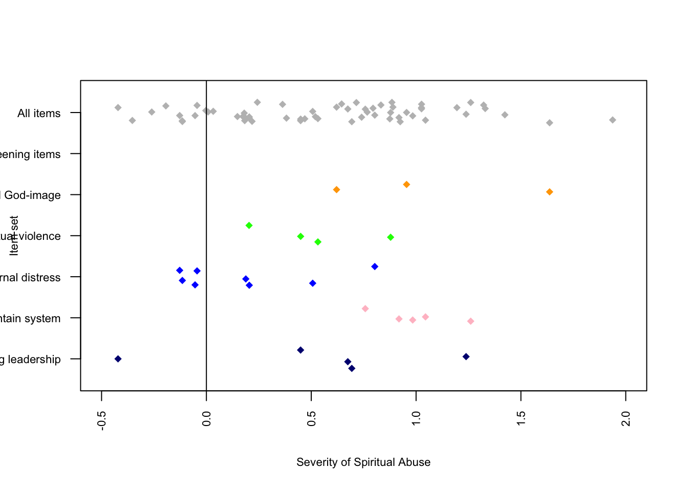

| n | mean | sd | median | trimmed | mad | min | max | range | skew | kurtosis | se | |
|---|---|---|---|---|---|---|---|---|---|---|---|---|
| Age | 3071 | 2.24 | 1.21 | 2 | 2.10 | 1.48 | 1 | 5 | 4 | 0.62 | -0.62 | 0.02 |
| Gender | 3056 | 38.57 | 12.27 | 36 | 37.21 | 10.38 | 16 | 88 | 72 | 0.98 | 0.59 | 0.22 |
| Sexual orientation | 3060 | 1.67 | 0.82 | 2 | 1.59 | 0.00 | 1 | 6 | 5 | 2.67 | 10.78 | 0.01 |
| Race | 3064 | 1.36 | 1.01 | 1 | 1.07 | 0.00 | 1 | 6 | 5 | 3.08 | 9.04 | 0.02 |
| Raised in Christian home | 3060 | 3.08 | 0.79 | 3 | 3.00 | 0.00 | 1 | 7 | 6 | 3.33 | 16.84 | 0.01 |
| Denomination of most abuse | 3061 | 1.09 | 0.28 | 1 | 1.00 | 0.00 | 1 | 2 | 1 | 2.93 | 6.60 | 0.00 |
| Racial makeup of abusive community | 3047 | 5.20 | 3.33 | 5 | 4.69 | 2.96 | 1 | 17 | 16 | 1.47 | 2.19 | 0.06 |
| Racial makeup of abusive group leadership | 3042 | 1.15 | 0.41 | 1 | 1.04 | 0.00 | 1 | 3 | 2 | 2.69 | 6.85 | 0.01 |
| Gender makeup of abusive group leadership | 3044 | 1.09 | 0.35 | 1 | 1.00 | 0.00 | 1 | 3 | 2 | 3.90 | 15.41 | 0.01 |
| Involvement in abusive group | 3048 | 1.82 | 0.79 | 2 | 1.76 | 1.48 | 1 | 5 | 4 | 0.48 | -0.78 | 0.01 |
| Current religious identification | 3054 | 5.54 | 1.99 | 7 | 5.92 | 0.00 | 1 | 7 | 6 | -1.25 | 0.24 | 0.04 |
| Current theological identification | 3057 | 3.24 | 2.96 | 1 | 2.92 | 0.00 | 1 | 8 | 7 | 0.70 | -1.36 | 0.05 |
| Current view of Bible | 2030 | 4.49 | 1.55 | 5 | 4.54 | 1.48 | 1 | 7 | 6 | -0.30 | -0.57 | 0.03 |
| Generation | 3054 | 2.23 | 0.54 | 2 | 2.23 | 0.00 | 1 | 3 | 2 | 0.11 | -0.23 | 0.01 |
| Podcast Use | 3056 | 2.43 | 0.79 | 2 | 2.35 | 0.00 | 1 | 5 | 4 | 0.76 | 0.22 | 0.01 |
Results
Participant Characteristics
In total, 3,222 individuals responded to the survey. Participants who did not opt out and completed at least 50% of the spiritual abuse item pool were considered complete responders and included in the study (N = 3,219). Non-responders included those who responded to less than half of the items (N=3).
Almost all participants (N = 3,064) answered demographics items, and the results are presented in Table tbl-DemsTable below. Compared to the general U.S. population, the sample was largely white (86%) and Protestant (57%). The average respondent saw themselves as slightly theologically liberal (M = 4.5, range 1-7). About 4 in 5 identified as straight (82%), and most were raised in a Christian home (87%).
Initial Item Analysis
In Table tbl-ClassicalItemTable we report classical statistics for the 66 SHAS items. We sorted the items by their mean. We flagged six items due to extreme values of skew (less than -2 or greater than +2) or kurtosis (less than -7 or greater than +7) and item-total correlations below 0.50. These included items EQ17, EQ27, EQ41, EQ46, EQ55, and EQ60. Category response proportions show that most people responded “Never” to these items. Thus, because these items do not apply to the vast majority of people in this population, we removed them from the item pool. This reduced the pool from 66 to 59 items.
| 1 | 2 | 3 | 4 | 5 | n | mean | sd | skew | kurtosis | Item-total correlation | flag | |
|---|---|---|---|---|---|---|---|---|---|---|---|---|
| EQ46 - Treated as less than because of my skin color | 0.94 | 0.03 | 0.02 | 0.01 | 0.00 | 3211 | 1.11 | 0.48 | 5.15 | 28.93 | 0.16 | * |
| EQ41 - Denied opportunities to serve because of my sexual orientation | 0.89 | 0.02 | 0.03 | 0.02 | 0.03 | 3211 | 1.27 | 0.88 | 3.30 | 9.87 | 0.31 | * |
| EQ17 - Treated as less than b/c my sexual orientation | 0.88 | 0.02 | 0.03 | 0.03 | 0.04 | 3208 | 1.34 | 0.97 | 2.87 | 6.96 | 0.35 | * |
| EQ47 - Medical care being postponed/withheld for religious reasons | 0.70 | 0.17 | 0.09 | 0.02 | 0.01 | 3218 | 1.48 | 0.86 | 1.93 | 3.40 | 0.52 | |
| EQ60 - Encouraged by leader to stay in abusive marriage | 0.76 | 0.09 | 0.07 | 0.05 | 0.02 | 3214 | 1.49 | 0.99 | 2.05 | 3.22 | 0.48 | * |
| EQ55 - Hearing cultural references in sermons unfamiliar to my race/eth. subculture | 0.66 | 0.18 | 0.11 | 0.04 | 0.02 | 3205 | 1.58 | 0.95 | 1.66 | 2.12 | 0.28 | * |
| IQ72 - Feeling as if God harmed me directly | 0.64 | 0.17 | 0.13 | 0.04 | 0.02 | 3070 | 1.64 | 0.99 | 1.52 | 1.55 | 0.54 | |
| IQ81 - Nightmares about my negative religious experiences | 0.56 | 0.21 | 0.15 | 0.06 | 0.02 | 3073 | 1.77 | 1.04 | 1.23 | 0.66 | 0.65 | |
| EQ65 - Cut off/shunned by more religious family members | 0.59 | 0.16 | 0.13 | 0.08 | 0.04 | 3220 | 1.82 | 1.18 | 1.27 | 0.48 | 0.61 | |
| EQ10 - Asked to give up personal goals by pastor | 0.59 | 0.16 | 0.13 | 0.08 | 0.04 | 3220 | 1.83 | 1.18 | 1.25 | 0.44 | 0.64 | |
| EQ26 - Pressured to forgive abuser while abuse was ongoing | 0.60 | 0.14 | 0.11 | 0.09 | 0.06 | 3212 | 1.87 | 1.27 | 1.24 | 0.21 | 0.66 | |
| EQ24 - Expected to consult pastor/leader before making non-religious decisions | 0.56 | 0.16 | 0.16 | 0.08 | 0.04 | 3221 | 1.89 | 1.18 | 1.10 | 0.07 | 0.66 | |
| EQ23 - Prayer replacing needed medical interventions | 0.51 | 0.21 | 0.17 | 0.08 | 0.03 | 3219 | 1.92 | 1.13 | 1.02 | 0.02 | 0.64 | |
| EQ27 - Denied opportunities to serve b/c of my gender | 0.60 | 0.11 | 0.12 | 0.09 | 0.08 | 3217 | 1.94 | 1.35 | 1.14 | -0.13 | 0.48 | * |
| EQ31 - Shunned/ignored by pastor/church/group | 0.46 | 0.22 | 0.18 | 0.09 | 0.05 | 3217 | 2.03 | 1.19 | 0.92 | -0.20 | 0.64 | |
| EQ30 - Deterred from seeking mental health treatment/counseling/medication | 0.50 | 0.17 | 0.17 | 0.11 | 0.05 | 3219 | 2.04 | 1.25 | 0.88 | -0.46 | 0.70 | |
| EQ43 - Shamed by pastor/group for poor spiritual/moral performance | 0.46 | 0.22 | 0.18 | 0.10 | 0.04 | 3217 | 2.04 | 1.18 | 0.86 | -0.31 | 0.73 | |
| IQ68 - Anxiety attacks triggered by religious stimuli | 0.49 | 0.17 | 0.19 | 0.11 | 0.05 | 3073 | 2.06 | 1.23 | 0.83 | -0.51 | 0.68 | |
| EQ52 - Blamed for harm I suffered rather than blaming who harmed me | 0.48 | 0.19 | 0.16 | 0.12 | 0.05 | 3217 | 2.08 | 1.26 | 0.85 | -0.52 | 0.76 | |
| IQ70 - Feeling betrayed by God | 0.42 | 0.24 | 0.21 | 0.09 | 0.05 | 3069 | 2.11 | 1.18 | 0.79 | -0.36 | 0.56 | |
| EQ49 - Leadership/group protecting and elevating abusive individuals | 0.44 | 0.22 | 0.18 | 0.11 | 0.05 | 3213 | 2.12 | 1.23 | 0.79 | -0.50 | 0.72 | |
| EQ16 - Church/community abandoning me in difficult time | 0.45 | 0.21 | 0.17 | 0.11 | 0.06 | 3217 | 2.13 | 1.27 | 0.83 | -0.50 | 0.69 | |
| EQ57 - Developing mental/physical ailments from conforming to group/leader’s expectation | 0.48 | 0.16 | 0.16 | 0.12 | 0.07 | 3219 | 2.15 | 1.33 | 0.78 | -0.70 | 0.72 | |
| EQ20 - Members pressured to give money despite financial hardship | 0.50 | 0.15 | 0.15 | 0.11 | 0.09 | 3217 | 2.16 | 1.39 | 0.82 | -0.71 | 0.68 | |
| EQ62 - Scripture used to justify physical violence | 0.43 | 0.19 | 0.21 | 0.11 | 0.05 | 3220 | 2.16 | 1.24 | 0.69 | -0.67 | 0.65 | |
| EQ59 - Pastor/group blame victim for their abuse | 0.42 | 0.21 | 0.19 | 0.12 | 0.05 | 3217 | 2.16 | 1.23 | 0.70 | -0.65 | 0.76 | |
| EQ21 - Taught I would risk Hell if left my church/group | 0.51 | 0.13 | 0.13 | 0.10 | 0.13 | 3218 | 2.20 | 1.47 | 0.81 | -0.83 | 0.69 | |
| EQ50 - Treated as less than because of my gender | 0.52 | 0.08 | 0.15 | 0.13 | 0.11 | 3219 | 2.23 | 1.47 | 0.70 | -1.04 | 0.54 | |
| IQ82 - Having trouble navigating life outside my church/community | 0.38 | 0.23 | 0.24 | 0.11 | 0.05 | 3071 | 2.24 | 1.21 | 0.62 | -0.62 | 0.61 | |
| EQ64 - Witnessing women pressured to stay in unfaithful/abusive marriages | 0.39 | 0.23 | 0.19 | 0.12 | 0.07 | 3220 | 2.26 | 1.27 | 0.67 | -0.70 | 0.71 | |
| EQ28 - Leadershi/group protecting abusive individuals | 0.37 | 0.24 | 0.19 | 0.13 | 0.06 | 3216 | 2.26 | 1.25 | 0.63 | -0.73 | 0.72 | |
| EQ40 - Threatening Divine punishment to keep group members in line | 0.44 | 0.17 | 0.18 | 0.12 | 0.10 | 3220 | 2.28 | 1.39 | 0.67 | -0.88 | 0.75 | |
| EQ63 - Shamed by pastor/group for raising questions or concerns | 0.36 | 0.23 | 0.22 | 0.13 | 0.06 | 3217 | 2.30 | 1.25 | 0.58 | -0.77 | 0.77 | |
| EQ19 - Behavior excessively monitored by pastor/group | 0.40 | 0.18 | 0.19 | 0.15 | 0.08 | 3219 | 2.32 | 1.33 | 0.56 | -0.96 | 0.75 | |
| EQ51 - Extreme pressure to be pastor/missionary/spiritual leader | 0.41 | 0.19 | 0.17 | 0.14 | 0.10 | 3216 | 2.33 | 1.38 | 0.59 | -0.98 | 0.62 | |
| EQ53 - Scripture used to justify abusive parent-child behavior | 0.39 | 0.19 | 0.20 | 0.14 | 0.09 | 3218 | 2.36 | 1.35 | 0.55 | -0.97 | 0.73 | |
| IQ79 - Distrust of God | 0.33 | 0.23 | 0.24 | 0.12 | 0.08 | 3068 | 2.40 | 1.27 | 0.50 | -0.81 | 0.61 | |
| EQ34 - Scripture used to justify physical punishment/severe discipline | 0.34 | 0.19 | 0.22 | 0.16 | 0.09 | 3219 | 2.46 | 1.33 | 0.42 | -1.05 | 0.65 | |
| EQ29 - Feeling special when in pastor’s good graces; otherwise ignored | 0.34 | 0.19 | 0.22 | 0.16 | 0.09 | 3213 | 2.47 | 1.34 | 0.40 | -1.08 | 0.69 | |
| IQ73 - Self-hatred or self-loathing | 0.31 | 0.21 | 0.24 | 0.15 | 0.09 | 3072 | 2.50 | 1.31 | 0.38 | -1.00 | 0.64 | |
| EQ11 - Disagree w/pastor portrayed as evil | 0.32 | 0.21 | 0.20 | 0.17 | 0.10 | 3216 | 2.52 | 1.35 | 0.38 | -1.12 | 0.77 | |
| EQ58 - Terror/horror used to motivate religious decisions | 0.32 | 0.18 | 0.24 | 0.16 | 0.10 | 3220 | 2.53 | 1.34 | 0.34 | -1.09 | 0.73 | |
| EQ7 - Pastor speaking on God's behalf | 0.35 | 0.18 | 0.19 | 0.16 | 0.13 | 3215 | 2.54 | 1.43 | 0.39 | -1.21 | 0.67 | |
| EQ42 - Seeing others shamed/shunned by pastor/leader/group | 0.25 | 0.24 | 0.26 | 0.17 | 0.08 | 3215 | 2.60 | 1.25 | 0.28 | -0.96 | 0.77 | |
| EQ44 - Love/acceptance offered only for high spiritual/moral performance | 0.30 | 0.18 | 0.23 | 0.19 | 0.10 | 3217 | 2.61 | 1.35 | 0.24 | -1.20 | 0.80 | |
| EQ56 - Being made to feel I was crazy/weird for doubts/questions | 0.27 | 0.17 | 0.23 | 0.21 | 0.12 | 3217 | 2.72 | 1.37 | 0.14 | -1.24 | 0.82 | |
| EQ18 - Church/pastor discourage critical thinking | 0.27 | 0.17 | 0.24 | 0.19 | 0.13 | 3220 | 2.75 | 1.37 | 0.14 | -1.21 | 0.77 | |
| EQ45 - Developmentally-inappropriate/anxious Hell/Satan/demons taught to young children | 0.29 | 0.17 | 0.20 | 0.18 | 0.16 | 3219 | 2.76 | 1.45 | 0.18 | -1.33 | 0.72 | |
| IQ78 - A lack of self-worth | 0.23 | 0.19 | 0.27 | 0.21 | 0.11 | 3071 | 2.77 | 1.30 | 0.10 | -1.09 | 0.67 | |
| EQ36 - Mental/physical problems interpreted as spiritual/moral weakness | 0.24 | 0.19 | 0.24 | 0.21 | 0.12 | 3216 | 2.78 | 1.34 | 0.11 | -1.17 | 0.77 | |
| EQ61 - Developmentally-inappropriate/anxious end times descriptions taught to young children | 0.30 | 0.15 | 0.20 | 0.19 | 0.17 | 3219 | 2.78 | 1.47 | 0.14 | -1.37 | 0.72 | |
| EQ32 - Feeling unable to express unhappiness | 0.24 | 0.16 | 0.27 | 0.21 | 0.11 | 3219 | 2.79 | 1.32 | 0.05 | -1.14 | 0.73 | |
| IQ74 - Sadness over the loss of my faith/religious community | 0.22 | 0.19 | 0.27 | 0.21 | 0.11 | 3071 | 2.79 | 1.29 | 0.07 | -1.08 | 0.60 | |
| IQ76 - Feeling I wasted years of my life in a church/set of beliefs | 0.28 | 0.16 | 0.19 | 0.18 | 0.19 | 3072 | 2.83 | 1.48 | 0.12 | -1.39 | 0.74 | |
| EQ54 - Being explicitly taught to distrust my intuitions | 0.23 | 0.16 | 0.24 | 0.20 | 0.17 | 3217 | 2.92 | 1.40 | 0.01 | -1.26 | 0.75 | |
| EQ37 - Made to feel less spiritually mature than pastor/leadership | 0.22 | 0.17 | 0.24 | 0.21 | 0.16 | 3221 | 2.94 | 1.38 | -0.01 | -1.22 | 0.75 | |
| EQ38 - Unrealistic demands placed on my moral/religious behavior | 0.22 | 0.16 | 0.24 | 0.20 | 0.18 | 3217 | 2.95 | 1.40 | -0.01 | -1.26 | 0.80 | |
| IQ71 - Avoiding religious activities/settings to reduce distressing feelings | 0.19 | 0.17 | 0.24 | 0.22 | 0.17 | 3074 | 3.01 | 1.36 | -0.06 | -1.19 | 0.74 | |
| IQ69 - Lack of spiritual direction/purpose | 0.13 | 0.20 | 0.32 | 0.23 | 0.12 | 3071 | 3.01 | 1.20 | -0.06 | -0.83 | 0.57 | |
| EQ39 - Made to feel shame over natural sexual desires (not actions) | 0.24 | 0.13 | 0.20 | 0.21 | 0.22 | 3219 | 3.05 | 1.48 | -0.12 | -1.37 | 0.72 | |
| IQ80 - Feeling isolated | 0.14 | 0.18 | 0.29 | 0.27 | 0.13 | 3070 | 3.07 | 1.23 | -0.17 | -0.91 | 0.68 | |
| IQ77 - Anger upon reflecting on negative religious experiences | 0.15 | 0.18 | 0.26 | 0.26 | 0.15 | 3075 | 3.08 | 1.28 | -0.16 | -1.02 | 0.77 | |
| EQ35 - Taught to distrust my emotions | 0.19 | 0.14 | 0.23 | 0.23 | 0.21 | 3217 | 3.12 | 1.39 | -0.18 | -1.20 | 0.74 | |
| EQ25 - Feeling unable to raise questions and issues | 0.15 | 0.15 | 0.25 | 0.27 | 0.18 | 3217 | 3.18 | 1.32 | -0.26 | -1.04 | 0.76 | |
| EQ66 - Others treated as less than due to their sexual orientation | 0.18 | 0.12 | 0.21 | 0.25 | 0.24 | 3216 | 3.27 | 1.41 | -0.34 | -1.15 | 0.71 | |
| EQ22 - Expected to follow pastor/leader rules re: dating/marriage/sex | 0.20 | 0.11 | 0.15 | 0.24 | 0.30 | 3218 | 3.33 | 1.49 | -0.39 | -1.28 | 0.70 |
Unidimensionality and Local Independence
Principal Components
We first analyzed the principal components in the 59 SHAS items. As shown in Figure fig-pca, the first component was large, accounting for nearly 30% of the variance. The second, third, and fourth components accounted for 4%, 3%, and 2% of the variance, respectively. The ratio of the eigenvalue of the first (largest) component to that of the second is approximately 13.

Proportion of Variance
Second, we estimated a unidimensional Rasch model on dichotomized responses to the 59 SHAS items and saved the residuals of the person parameters. We calculated the variance in the observed item responses and the variance of the residuals. Reckase (1979) suggests that the unidimensionality assumption is safely met if the Rasch model explains 20% of the variance in the data. In this case, the proportion of variance in the SHAS item data explained by the Rasch model was .23. Thus, the SHAS data meet this criterion.
Principal Component Analysis of Residuals (PCAR)
Next, we examined the principal components of the correlations among residuals of the Rasch analysis. The premise is that once the Rasch model has been estimated, correlations among the item residuals should be minimal. Linacre () suggests that contrasts with eigenvalues of 2.0 or below can be considered noise. In Figure fig-pcar, our PCAR analysis found only one contrast that rose above that 2.0 threshold.

Q3
Finally, we calculated the Q3 statistic “Effects of Local Item Dependence on the Fit and Equating Performance of the Three-Parameter Logistic Model” (1984) to examine correlations among item residuals, the premise being that the latent trait should account for so much common variance in the item responses that any net correlations among the items should be weak. The Q3 statistic index criteria are that the raw residual correlation between pairs of items should never exceed 0.10 (Marais & Andrich, 2008). Of the 1,711 item pairs, the mean correlation was -0.017 with a standard deviation of 0.035. Thus, most of the residual correlations among items were very weak. Figure fig-q3 plots the matrix of correlations between item residuals. Each square depicts a correlation. The squares are shaded in grey with the lightest shade indicating the weakest correlations. As hoped, the vast majority of squares are very light, indicating weak correlations among the item residuals.
WLE Reliability= 0.918
Yen's Q3 Statistic based on an estimated theta score
*** 60 Items | 1770 item pairs
*** Q3 Descriptives
M SD Min 10% 25% 50% 75% 90% Max
-0.017 0.036 -0.109 -0.055 -0.040 -0.020 -0.001 0.025 0.321 
Rasch Rating Scale Analysis
We used the Rasch Rating Scale Model (RSM) (Andrich 1978) to examine the SHAS item pool. The RSM is a Rasch model (Rasch 1960) that combines (or “calibrates”) information from items with information from persons to arrive at a common scale for measuring both an item’s and a person’s level of a latent trait, in this case, severity of spiritual abuse. This scale is expressed in logits (log odds units). Whereas the Rasch model was designed for use with dichotomous items (0 = incorrect response, 1 = correct response), the RSM is an extension for use with polytomous items based on rating scales such as Likert scales of agreement (Embretson and Reise 2000).
We also use different language from conventional IRT analyses. Because IRT was developed to measure student achievement, IRT statistics for both items and persons tend to use language of “ability” and “difficulty.” For our purpose to measure a psychological trait such as the experience of spiritual abuse, we chose instead to adopt language of “severity.” We used person parameters and scale scores to represent participants’ severity of abuse and to describe item parameters as severity parameters.
library(tidyverse) library(dplyr) library(tidyr) library(knitr) library(kableExtra) library(stats4) library(lattice) library(mirt) library(WrightMap)
The RSM estimates the probability of a person choosing among several response options (i.e. Never, Once or twice) given two values: the severity of abuse represented by the item, and the person’s severity of the latent trait (spiritual abuse). The increase in severity involved in choosing between two response categories is called a “step parameter”. The RSM makes two assumptions of the response categories. One is that all items use the same rating scale. The other is that the same response categories distinguish persons equally well for each item. For these reasons the RSM estimates the same step parameters for all the items.
To convey this information visually, Figure fig-RM-plot1 and Figure fig-RM-plot2 are plots of the category response functions of two items. In both, the horizontal axis is the scale of spiritual abuse expressed in logits ranging from -2 to +2. The vertical axis is the probability of selecting a given response (i.e., “Always”) given the person’s overall severity of spiritual abuse. The blue line is the probability of selecting Category 1 (“Never”) for persons with less severe spiritual abuse. Persons with less severe spiritual abuse are most likely to select “Never” while those with more severe abuse are most likely to select “Always.” Between these two extremes are persons with more moderate or average spiritual abuse. These persons are more likely to Categories 3 or 4, “Sometimes” or “Often”, respectively. Both plots show curves that display identical step parameters.
Iteration in WLE/MLE estimation 1 | Maximal change 2.7551
Iteration in WLE/MLE estimation 2 | Maximal change 0.8593
Iteration in WLE/MLE estimation 3 | Maximal change 0.4864
Iteration in WLE/MLE estimation 4 | Maximal change 0.1926
Iteration in WLE/MLE estimation 5 | Maximal change 0.028
Iteration in WLE/MLE estimation 6 | Maximal change 0.0012
Iteration in WLE/MLE estimation 7 | Maximal change 0
----
WLE Reliability= 0.963 
Iteration in WLE/MLE estimation 1 | Maximal change 2.7551
Iteration in WLE/MLE estimation 2 | Maximal change 0.8593
Iteration in WLE/MLE estimation 3 | Maximal change 0.4864
Iteration in WLE/MLE estimation 4 | Maximal change 0.1926
Iteration in WLE/MLE estimation 5 | Maximal change 0.028
Iteration in WLE/MLE estimation 6 | Maximal change 0.0012
Iteration in WLE/MLE estimation 7 | Maximal change 0
----
WLE Reliability= 0.963 
These plots point out a step reversal between “Never” and “Once or twice”. Persons reporting the least severe spiritual abuse were most likely to report “Never” to this prompt of medical care being postponed or withheld for religious reasons. Persons farther along the scale who have experienced “average” average spiritual abuse should be more likely to report “Once or twice” but were still more likely to report “Never”. This finding suggests the “Never” and “Once or twice” categories might be collapsed.
Item Severity Parameters and Fit Statistics
Table tbl-RSM-item-tbl reports item parameters and fit statistics for the SHAS items. The first column, xsi, reports the severity parameter of the item, and we have sorted the items by this value from least to most severe to facilitate comparison between items. Table tbl-RSM-item-tbl also reports fit statistics for the items. These statistics reflect how closely the observed patterns of item responses fit the patterns of item responses predicted by the RSM. These fit statistics are chi-square statistics which examine the cumulative difference the observed pattern of item responses and the pattern of item responses that the model would expect.
Two fit statistics commonly used in IRT models are the infit mean square and the outfit mean square (Bond and Fox 2015). The infit statistic places greater emphasis on unexpected responses that are close to the persons and item location. The outfit is sensitive to unexpected responses that are far from the location. The expected value of infit or outfit for each item is 1.0, with a range of acceptable values ranging from 0.5 to 1.5. Values outside these boundaries indicate a lack of fit between items and the model. All but one of the 60 items had infit and outfit statistics within the acceptable range.
| subscale | xsi | se.xsi | Outfit | Infit | |
|---|---|---|---|---|---|
| *EQ22 - Expected to follow pastor/leader rules re: dating/marriage/sex | controlling leadership | -0.42 | 0.02 | 1.20 | 1.26 |
| EQ66 - Others treated as less than due to their sexual orientation | -0.35 | 0.02 | 1.11 | 1.05 | |
| EQ25 - Feeling unable to raise questions and issues | -0.26 | 0.02 | 0.76 | 0.76 | |
| EQ35 - Taught to distrust my emotions | -0.19 | 0.02 | 1.08 | 0.97 | |
| *IQ77 - Anger upon reflecting on negative religious experiences | internal distress | -0.13 | 0.02 | 0.71 | 0.69 |
| EQ39 - Made to feel shame over natural sexual desires (not actions) | -0.12 | 0.02 | 1.11 | 1.12 | |
| *IQ80 - Feeling isolated | internal distress | -0.11 | 0.02 | 0.94 | 0.87 |
| *IQ69 - Lack of spiritual direction/purpose | internal distress | -0.05 | 0.02 | 1.34 | 1.12 |
| *IQ71 - Avoiding religious activities/settings to reduce distressing feelings | internal distress | -0.04 | 0.02 | 0.92 | 0.92 |
| EQ38 - Unrealistic demands placed on my moral/religious behavior | 0.00 | 0.02 | 0.75 | 0.77 | |
| EQ37 - Made to feel less spiritually mature than pastor/leadership | 0.01 | 0.02 | 0.92 | 0.90 | |
| EQ54 - Being explicitly taught to distrust my intuitions | 0.03 | 0.02 | 0.94 | 0.93 | |
| IQ76 - Feeling I wasted years of my life in a church/set of beliefs | 0.15 | 0.02 | 1.06 | 1.09 | |
| EQ32 - Feeling unable to express unhappiness | 0.17 | 0.02 | 0.91 | 0.88 | |
| EQ61 - Developmentally-inappropriate/anxious end times descriptions taught to young children | 0.18 | 0.02 | 1.11 | 1.14 | |
| EQ36 - Mental/physical problems interpreted as spiritual/moral weakness | 0.18 | 0.02 | 0.83 | 0.82 | |
| *IQ74 - Sadness over the loss of my faith/religious community | internal distress | 0.19 | 0.02 | 1.33 | 1.18 |
| *EQ45 - Developmentally-inappropriate/anxious Hell/Satan/demons taught to young children | spiritual violence | 0.20 | 0.02 | 1.09 | 1.11 |
| *IQ78 - A lack of self-worth | internal distress | 0.20 | 0.02 | 1.08 | 1.02 |
| EQ18 - Church/pastor discourage critical thinking | 0.22 | 0.02 | 0.82 | 0.84 | |
| EQ56 - Being made to feel I was crazy/weird for doubts/questions | 0.24 | 0.02 | 0.68 | 0.71 | |
| EQ44 - Love/acceptance offered only for high spiritual/moral performance | 0.36 | 0.02 | 0.75 | 0.76 | |
| EQ42 - Seeing others shamed/shunned by pastor/leader/group | 0.38 | 0.02 | 0.74 | 0.73 | |
| *EQ7 - Pastor speaking on God's behalf | controlling leadership | 0.45 | 0.02 | 1.39 | 1.26 |
| *EQ58 - Terror/horror used to motivate religious decisions | spiritual violence | 0.45 | 0.02 | 0.91 | 0.94 |
| EQ11 - Disagree w/pastor portrayed as evil | 0.47 | 0.02 | 0.83 | 0.86 | |
| *IQ73 - Self-hatred or self-loathing | internal distress | 0.51 | 0.02 | 1.17 | 1.16 |
| EQ29 - Feeling special when in pastor’s good graces; otherwise ignored | 0.52 | 0.02 | 1.11 | 1.08 | |
| *EQ34 - Scripture used to justify physical punishment/severe discipline | spiritual violence | 0.53 | 0.02 | 1.21 | 1.17 |
| *IQ79 - Distrust of God | harmful God-image | 0.62 | 0.02 | 1.35 | 1.20 |
| EQ53 - Scripture used to justify abusive parent-child behavior | 0.64 | 0.02 | 0.96 | 1.01 | |
| *EQ51 - Extreme pressure to be pastor/missionary/spiritual leader | controlling leadership | 0.67 | 0.02 | 1.40 | 1.38 |
| *EQ19 - Behavior excessively monitored by pastor/group | controlling leadership | 0.69 | 0.02 | 0.85 | 0.92 |
| EQ63 - Shamed by pastor/group for raising questions or concerns | 0.72 | 0.02 | 0.75 | 0.78 | |
| EQ40 - Threatening Divine punishment to keep group members in line | 0.74 | 0.02 | 0.92 | 1.02 | |
| *EQ28 - Leadershi/group protecting abusive individuals | maintain system | 0.76 | 0.02 | 0.92 | 0.90 |
| EQ64 - Witnessing women pressured to stay in unfaithful/abusive marriages | 0.77 | 0.02 | 0.99 | 0.99 | |
| EQ50 - Treated as less than because of my gender | gender discrimination | 0.79 | 0.02 | 1.97 | 1.92 |
| *IQ82 - Having trouble navigating life outside my church/community | internal distress | 0.80 | 0.02 | 1.17 | 1.15 |
| EQ21 - Taught I would risk Hell if left my church/group | 0.83 | 0.02 | 1.30 | 1.39 | |
| EQ59 - Pastor/group blame victim for their abuse | 0.87 | 0.02 | 0.75 | 0.81 | |
| *EQ62 - Scripture used to justify physical violence | spiritual violence | 0.88 | 0.02 | 1.08 | 1.11 |
| EQ20 - Members pressured to give money despite financial hardship | 0.88 | 0.02 | 1.14 | 1.27 | |
| EQ57 - Developing mental/physical ailments from conforming to group/leader’s expectation | 0.89 | 0.02 | 0.95 | 1.08 | |
| *EQ16 - Church/community abandoning me in difficult time | maintain system | 0.92 | 0.02 | 1.02 | 1.05 |
| EQ49 - Leadership/group protecting and elevating abusive individuals | 0.92 | 0.02 | 0.88 | 0.92 | |
| *IQ70 - Feeling betrayed by God | harmful God-image | 0.95 | 0.02 | 1.38 | 1.27 |
| *EQ52 - Blamed for harm I suffered rather than blaming who harmed me | maintain system | 0.98 | 0.02 | 0.80 | 0.89 |
| IQ68 - Anxiety attacks triggered by religious stimuli | 1.03 | 0.02 | 0.98 | 1.06 | |
| EQ30 - Deterred from seeking mental health treatment/counseling/medication | 1.03 | 0.02 | 0.95 | 1.03 | |
| EQ43 - Shamed by pastor/group for poor spiritual/moral performance | 1.03 | 0.02 | 0.81 | 0.84 | |
| *EQ31 - Shunned/ignored by pastor/church/group | maintain system | 1.04 | 0.02 | 1.13 | 1.08 |
| EQ23 - Prayer replacing needed medical interventions | 1.19 | 0.02 | 1.07 | 1.08 | |
| *EQ24 - Expected to consult pastor/leader before making non-religious decisions | controlling leadership | 1.24 | 0.02 | 1.01 | 1.08 |
| *EQ26 - Pressured to forgive abuser while abuse was ongoing | maintain system | 1.26 | 0.02 | 1.34 | 1.29 |
| EQ10 - Asked to give up personal goals by pastor | 1.32 | 0.02 | 1.10 | 1.19 | |
| EQ65 - Cut off/shunned by more religious family members | 1.33 | 0.02 | 1.28 | 1.26 | |
| IQ81 - Nightmares about my negative religious experiences | 1.42 | 0.02 | 0.90 | 0.97 | |
| *IQ72 - Feeling as if God harmed me directly | harmful God-image | 1.64 | 0.02 | 1.14 | 1.22 |
| EQ47 - Medical care being postponed/withheld for religious reasons | 1.94 | 0.03 | 1.11 | 1.16 |

Reliability
The RSM expresses internal consistency reliability as Rasch person separation. Based on Table X, the SHAS has a high Rasch person separation reliability value of .963, indicating that the estimated RSM scale discriminated well between persons with varying severity of spiritual abuse.
The SHAS also has a high Rasch item separation reliability with Rel = .XX, χ2 (XX) = XXXX.X, p < .XX, implying that the items have a good spread in terms of item ordering and hierarchy.
Item-Person Map
Figure fig-RSM-WrightMap displays an item-person map (also called a “Wright map”) that shows the item severities of the SHAS items and the person severities for each person who completed the survey. All these severities are estimated in logits (log odds units) as the unit of measures. This means the higher the logit value for an item is, the less likely it was for a person to endorse that particular item. On the other hand, higher logit values for each person indicate more severe spiritual abuse. On the variable map, the mean item severity is constrained to be 0.00 with person severities being relative to that mean item severity While column 1 shows the latent continuum in terms of logit values as the unit of measurement underlying the SHAS, columns 2 and 3 represent the severities of the people and the items.
Figure fig-RSM-WrightMap shows good overlap between the person trait and item severity as evidenced by the match between the mean of the person severity (M = − 0.58) and the mean of the item severity (M = 0.00). This suggests that the majority of the items were appropriate for the sample. While person severity measures range from X.XX logits to − X.XX logits (M = − 0.XX, SD = 0.XX, N = XXXX), the item severities range from X.XX logits to − X.XX logits (M = X.XX, SD = 0.XX, N = XXXX). The item representing the most severe spiritual abuse for participants is Item X, “I feel … XXX” with the severity at X.XX logits (also reported in Appendix Table 2). By contrast the item representing the least severe spiritual abuse is item XX, “I would …”, with − 1.08 logits.

Model-Data Fit
To assess the overall fit of the RSM to the SHAS item response data, we use two statistics. The first is the Root Mean Square Error of Approximation (RMSEA). The suggested cutoff for RMSEA is .06. The second is the CFI. The suggested cutoff for the CFI is .95. These fit statistics are presented in Table tbl-RSM-model-fit.
?(caption)
'log Lik.' -225573.6 (df=64)The obtained RMSEA value of .09 (95% CI[.092, .093]) exceeds the cutoff of .06. The CFI of .953 meets the recommended .95 threshold. Together these statistics evidence that the RSM fits the SHAS items.
DIF Analysis
Differential item functioning (DIF) examines how an item functions differently for people of equal standing on the trait. In this case, we conducted DIF analysis of the SHAS items to examine item bias by gender, and age, and race. [We applied logistic ordinal regression with IRT scoring. [We used the Chi-squared likelihood-ratio statistic as the initial DIF detection criteria (alpha < 0.01) and a cut-off of McFadden pseudo R2Δ ≥ 0.02 in model comparisons to determine substantial DIF, a reasonable threshold used in the development of self-reported health outcomes.]
Iteration: 1, Log-Lik: -213318.816, Max-Change: 1.97479
Iteration: 2, Log-Lik: -207326.915, Max-Change: 0.78632
Iteration: 3, Log-Lik: -206827.051, Max-Change: 0.14588
Iteration: 4, Log-Lik: -206716.928, Max-Change: 0.20478
Iteration: 5, Log-Lik: -206638.290, Max-Change: 0.18581
Iteration: 6, Log-Lik: -206576.440, Max-Change: 0.20030
Iteration: 7, Log-Lik: -206520.234, Max-Change: 0.20248
Iteration: 8, Log-Lik: -206473.738, Max-Change: 0.19881
Iteration: 9, Log-Lik: -206431.582, Max-Change: 0.19055
Iteration: 10, Log-Lik: -206395.065, Max-Change: 0.18567
Iteration: 11, Log-Lik: -206364.147, Max-Change: 0.36756
Iteration: 12, Log-Lik: -206295.370, Max-Change: 0.22522
Iteration: 13, Log-Lik: -206270.523, Max-Change: 0.15986
Iteration: 14, Log-Lik: -206247.418, Max-Change: 0.20072
Iteration: 15, Log-Lik: -206228.098, Max-Change: 0.18190
Iteration: 16, Log-Lik: -206210.358, Max-Change: 0.15196
Iteration: 17, Log-Lik: -206193.523, Max-Change: 0.13424
Iteration: 18, Log-Lik: -206178.731, Max-Change: 0.11090
Iteration: 19, Log-Lik: -206164.318, Max-Change: 0.12232
Iteration: 20, Log-Lik: -206151.746, Max-Change: 0.10973
Iteration: 21, Log-Lik: -206139.934, Max-Change: 0.10888
Iteration: 22, Log-Lik: -206129.186, Max-Change: 0.09991
Iteration: 23, Log-Lik: -206119.191, Max-Change: 0.09902
Iteration: 24, Log-Lik: -206110.082, Max-Change: 0.09119
Iteration: 25, Log-Lik: -206101.578, Max-Change: 0.09067
Iteration: 26, Log-Lik: -206093.823, Max-Change: 0.08374
Iteration: 27, Log-Lik: -206086.563, Max-Change: 0.08330
Iteration: 28, Log-Lik: -206079.933, Max-Change: 0.07733
Iteration: 29, Log-Lik: -206073.715, Max-Change: 0.07723
Iteration: 30, Log-Lik: -206068.031, Max-Change: 0.07247
Iteration: 31, Log-Lik: -206062.692, Max-Change: 0.07296
Iteration: 32, Log-Lik: -206057.810, Max-Change: 0.06925
Iteration: 33, Log-Lik: -206053.219, Max-Change: 0.07012
Iteration: 34, Log-Lik: -206050.472, Max-Change: 0.03063
Iteration: 35, Log-Lik: -206045.892, Max-Change: 0.02322
Iteration: 36, Log-Lik: -206041.820, Max-Change: 0.01988
Iteration: 37, Log-Lik: -206032.733, Max-Change: 0.02755
Iteration: 38, Log-Lik: -206027.119, Max-Change: 0.03479
Iteration: 39, Log-Lik: -206022.114, Max-Change: 0.03620
Iteration: 40, Log-Lik: -206019.922, Max-Change: 0.03688
Iteration: 41, Log-Lik: -206015.800, Max-Change: 0.02438
Iteration: 42, Log-Lik: -206013.984, Max-Change: 0.01205
Iteration: 43, Log-Lik: -206010.997, Max-Change: 0.01116
Iteration: 44, Log-Lik: -206008.752, Max-Change: 0.01087
Iteration: 45, Log-Lik: -206006.704, Max-Change: 0.00975
Iteration: 46, Log-Lik: -205997.586, Max-Change: 0.01197
Iteration: 47, Log-Lik: -205996.528, Max-Change: 0.00841
Iteration: 48, Log-Lik: -205995.470, Max-Change: 0.00622
Iteration: 49, Log-Lik: -205994.488, Max-Change: 0.00584
Iteration: 50, Log-Lik: -205993.804, Max-Change: 0.00559
Iteration: 51, Log-Lik: -205993.195, Max-Change: 0.00558
Iteration: 52, Log-Lik: -205989.948, Max-Change: 0.00611
Iteration: 53, Log-Lik: -205989.587, Max-Change: 0.00410
Iteration: 54, Log-Lik: -205989.252, Max-Change: 0.00433
Iteration: 55, Log-Lik: -205987.937, Max-Change: 0.00314
Iteration: 56, Log-Lik: -205987.736, Max-Change: 0.00311
Iteration: 57, Log-Lik: -205987.542, Max-Change: 0.00323
Iteration: 58, Log-Lik: -205986.823, Max-Change: 0.00841
Iteration: 59, Log-Lik: -205986.770, Max-Change: 0.00530
Iteration: 60, Log-Lik: -205986.573, Max-Change: 0.00196
Iteration: 61, Log-Lik: -205986.451, Max-Change: 0.00250
Iteration: 62, Log-Lik: -205986.338, Max-Change: 0.00188
Iteration: 63, Log-Lik: -205986.253, Max-Change: 0.00217
Iteration: 64, Log-Lik: -205986.073, Max-Change: 0.00173
Iteration: 65, Log-Lik: -205985.983, Max-Change: 0.00159
Iteration: 66, Log-Lik: -205985.906, Max-Change: 0.00166
Iteration: 67, Log-Lik: -205985.526, Max-Change: 0.00522
Iteration: 68, Log-Lik: -205985.435, Max-Change: 0.00134
Iteration: 69, Log-Lik: -205985.382, Max-Change: 0.00120
Iteration: 70, Log-Lik: -205985.311, Max-Change: 0.00137
Iteration: 71, Log-Lik: -205985.265, Max-Change: 0.00154
Iteration: 72, Log-Lik: -205985.226, Max-Change: 0.00215
Iteration: 73, Log-Lik: -205985.162, Max-Change: 0.00133
Iteration: 74, Log-Lik: -205985.118, Max-Change: 0.00137
Iteration: 75, Log-Lik: -205985.092, Max-Change: 0.00136
Iteration: 76, Log-Lik: -205985.047, Max-Change: 0.00339
Iteration: 77, Log-Lik: -205985.022, Max-Change: 0.00324
Iteration: 78, Log-Lik: -205985.000, Max-Change: 0.00406
Iteration: 79, Log-Lik: -205984.981, Max-Change: 0.00164
Iteration: 80, Log-Lik: -205984.940, Max-Change: 0.00059
Iteration: 81, Log-Lik: -205984.922, Max-Change: 0.00198
Iteration: 82, Log-Lik: -205984.923, Max-Change: 0.00262
Iteration: 83, Log-Lik: -205984.880, Max-Change: 0.00055
Iteration: 84, Log-Lik: -205984.864, Max-Change: 0.00156
Iteration: 85, Log-Lik: -205984.864, Max-Change: 0.00279
Iteration: 86, Log-Lik: -205984.826, Max-Change: 0.00077
Iteration: 87, Log-Lik: -205984.811, Max-Change: 0.00109
Iteration: 88, Log-Lik: -205984.753, Max-Change: 0.00208
Iteration: 89, Log-Lik: -205984.721, Max-Change: 0.00070
Iteration: 90, Log-Lik: -205984.704, Max-Change: 0.00160
Iteration: 91, Log-Lik: -205984.700, Max-Change: 0.00128
Iteration: 92, Log-Lik: -205984.675, Max-Change: 0.00079
Iteration: 93, Log-Lik: -205984.660, Max-Change: 0.00064
Iteration: 94, Log-Lik: -205984.647, Max-Change: 0.00036
Iteration: 95, Log-Lik: -205984.645, Max-Change: 0.00045
Iteration: 96, Log-Lik: -205984.636, Max-Change: 0.00043
Iteration: 97, Log-Lik: -205984.635, Max-Change: 0.00167
Iteration: 98, Log-Lik: -205984.633, Max-Change: 0.00097
Iteration: 99, Log-Lik: -205984.615, Max-Change: 0.00047
Iteration: 100, Log-Lik: -205984.615, Max-Change: 0.00039
Iteration: 101, Log-Lik: -205984.613, Max-Change: 0.00041
Iteration: 102, Log-Lik: -205984.604, Max-Change: 0.00121
Iteration: 103, Log-Lik: -205984.602, Max-Change: 0.00173
Iteration: 104, Log-Lik: -205984.582, Max-Change: 0.00108
Iteration: 105, Log-Lik: -205984.570, Max-Change: 0.00094
Iteration: 106, Log-Lik: -205984.530, Max-Change: 0.00216
Iteration: 107, Log-Lik: -205984.509, Max-Change: 0.00200
Iteration: 108, Log-Lik: -205984.507, Max-Change: 0.00207
Iteration: 109, Log-Lik: -205984.499, Max-Change: 0.00061
Iteration: 110, Log-Lik: -205984.497, Max-Change: 0.00082
Iteration: 111, Log-Lik: -205984.489, Max-Change: 0.00035
Iteration: 112, Log-Lik: -205984.489, Max-Change: 0.00027
Iteration: 113, Log-Lik: -205984.488, Max-Change: 0.00039
Iteration: 114, Log-Lik: -205984.481, Max-Change: 0.00039
Iteration: 115, Log-Lik: -205984.481, Max-Change: 0.00030
Iteration: 116, Log-Lik: -205984.480, Max-Change: 0.00047
Iteration: 117, Log-Lik: -205984.474, Max-Change: 0.00040
Iteration: 118, Log-Lik: -205984.474, Max-Change: 0.00029
Iteration: 119, Log-Lik: -205984.472, Max-Change: 0.00033
Iteration: 120, Log-Lik: -205984.466, Max-Change: 0.00029
Iteration: 121, Log-Lik: -205984.466, Max-Change: 0.00113
Iteration: 122, Log-Lik: -205984.464, Max-Change: 0.00072
Iteration: 123, Log-Lik: -205984.453, Max-Change: 0.00025
Iteration: 124, Log-Lik: -205984.452, Max-Change: 0.00110
Iteration: 125, Log-Lik: -205984.451, Max-Change: 0.00087
Iteration: 126, Log-Lik: -205984.439, Max-Change: 0.00035
Iteration: 127, Log-Lik: -205984.439, Max-Change: 0.00031
Iteration: 128, Log-Lik: -205984.438, Max-Change: 0.00044
Iteration: 129, Log-Lik: -205984.432, Max-Change: 0.00037
Iteration: 130, Log-Lik: -205984.432, Max-Change: 0.00027
Iteration: 131, Log-Lik: -205984.431, Max-Change: 0.00032
Iteration: 132, Log-Lik: -205984.426, Max-Change: 0.00027
Iteration: 133, Log-Lik: -205984.426, Max-Change: 0.00107
Iteration: 134, Log-Lik: -205984.423, Max-Change: 0.00089
Iteration: 135, Log-Lik: -205984.421, Max-Change: 0.00067
Iteration: 136, Log-Lik: -205984.418, Max-Change: 0.00048
Iteration: 137, Log-Lik: -205984.416, Max-Change: 0.00040
Iteration: 138, Log-Lik: -205984.413, Max-Change: 0.00028
Iteration: 139, Log-Lik: -205984.412, Max-Change: 0.00093
Iteration: 140, Log-Lik: -205984.410, Max-Change: 0.00093
Iteration: 141, Log-Lik: -205984.408, Max-Change: 0.00057
Iteration: 142, Log-Lik: -205984.405, Max-Change: 0.00049
Iteration: 143, Log-Lik: -205984.403, Max-Change: 0.00034
Iteration: 144, Log-Lik: -205984.400, Max-Change: 0.00029
Iteration: 145, Log-Lik: -205984.400, Max-Change: 0.00101
Iteration: 146, Log-Lik: -205984.398, Max-Change: 0.00084
Iteration: 147, Log-Lik: -205984.395, Max-Change: 0.00063
Iteration: 148, Log-Lik: -205984.392, Max-Change: 0.00046
Iteration: 149, Log-Lik: -205984.391, Max-Change: 0.00038
Iteration: 150, Log-Lik: -205984.388, Max-Change: 0.00026
Iteration: 151, Log-Lik: -205984.388, Max-Change: 0.00088
Iteration: 152, Log-Lik: -205984.386, Max-Change: 0.00088
Iteration: 153, Log-Lik: -205984.383, Max-Change: 0.00054
Iteration: 154, Log-Lik: -205984.381, Max-Change: 0.00047
Iteration: 155, Log-Lik: -205984.379, Max-Change: 0.00032
Iteration: 156, Log-Lik: -205984.376, Max-Change: 0.00028
Iteration: 157, Log-Lik: -205984.376, Max-Change: 0.00096
Iteration: 158, Log-Lik: -205984.374, Max-Change: 0.00080
Iteration: 159, Log-Lik: -205984.372, Max-Change: 0.00060
Iteration: 160, Log-Lik: -205984.369, Max-Change: 0.00044
Iteration: 161, Log-Lik: -205984.368, Max-Change: 0.00036
Iteration: 162, Log-Lik: -205984.365, Max-Change: 0.00025
Iteration: 163, Log-Lik: -205984.365, Max-Change: 0.00084
Iteration: 164, Log-Lik: -205984.363, Max-Change: 0.00084
Iteration: 165, Log-Lik: -205984.361, Max-Change: 0.00051
Iteration: 166, Log-Lik: -205984.359, Max-Change: 0.00045
Iteration: 167, Log-Lik: -205984.358, Max-Change: 0.00031
Iteration: 168, Log-Lik: -205984.355, Max-Change: 0.00027
Iteration: 169, Log-Lik: -205984.354, Max-Change: 0.00092
Iteration: 170, Log-Lik: -205984.353, Max-Change: 0.00077
Iteration: 171, Log-Lik: -205984.351, Max-Change: 0.00058
Iteration: 172, Log-Lik: -205984.348, Max-Change: 0.00042
Iteration: 173, Log-Lik: -205984.347, Max-Change: 0.00035
Iteration: 174, Log-Lik: -205984.344, Max-Change: 0.00024
Iteration: 175, Log-Lik: -205984.344, Max-Change: 0.00081
Iteration: 176, Log-Lik: -205984.343, Max-Change: 0.00081
Iteration: 177, Log-Lik: -205984.340, Max-Change: 0.00049
Iteration: 178, Log-Lik: -205984.338, Max-Change: 0.00043
Iteration: 179, Log-Lik: -205984.337, Max-Change: 0.00029
Iteration: 180, Log-Lik: -205984.334, Max-Change: 0.00026
Iteration: 181, Log-Lik: -205984.334, Max-Change: 0.00088
Iteration: 182, Log-Lik: -205984.333, Max-Change: 0.00074
Iteration: 183, Log-Lik: -205984.331, Max-Change: 0.00056
Iteration: 184, Log-Lik: -205984.329, Max-Change: 0.00040
Iteration: 185, Log-Lik: -205984.328, Max-Change: 0.00034
Iteration: 186, Log-Lik: -205984.325, Max-Change: 0.00023
Iteration: 187, Log-Lik: -205984.325, Max-Change: 0.00078
Iteration: 188, Log-Lik: -205984.323, Max-Change: 0.00078
Iteration: 189, Log-Lik: -205984.321, Max-Change: 0.00047
Iteration: 190, Log-Lik: -205984.319, Max-Change: 0.00041
Iteration: 191, Log-Lik: -205984.318, Max-Change: 0.00028
Iteration: 192, Log-Lik: -205984.316, Max-Change: 0.00025
Iteration: 193, Log-Lik: -205984.316, Max-Change: 0.00085
Iteration: 194, Log-Lik: -205984.314, Max-Change: 0.00071
Iteration: 195, Log-Lik: -205984.312, Max-Change: 0.00054
Iteration: 196, Log-Lik: -205984.310, Max-Change: 0.00039
Iteration: 197, Log-Lik: -205984.309, Max-Change: 0.00032
Iteration: 198, Log-Lik: -205984.307, Max-Change: 0.00022
Iteration: 199, Log-Lik: -205984.307, Max-Change: 0.00075
Iteration: 200, Log-Lik: -205984.305, Max-Change: 0.00075
Iteration: 201, Log-Lik: -205984.304, Max-Change: 0.00046
Iteration: 202, Log-Lik: -205984.302, Max-Change: 0.00040
Iteration: 203, Log-Lik: -205984.301, Max-Change: 0.00027
Iteration: 204, Log-Lik: -205984.298, Max-Change: 0.00024
Iteration: 205, Log-Lik: -205984.298, Max-Change: 0.00082
Iteration: 206, Log-Lik: -205984.297, Max-Change: 0.00069
Iteration: 207, Log-Lik: -205984.295, Max-Change: 0.00052
Iteration: 208, Log-Lik: -205984.293, Max-Change: 0.00037
Iteration: 209, Log-Lik: -205984.292, Max-Change: 0.00031
Iteration: 210, Log-Lik: -205984.290, Max-Change: 0.00022
Iteration: 211, Log-Lik: -205984.290, Max-Change: 0.00072
Iteration: 212, Log-Lik: -205984.289, Max-Change: 0.00072
Iteration: 213, Log-Lik: -205984.287, Max-Change: 0.00044
Iteration: 214, Log-Lik: -205984.285, Max-Change: 0.00039
Iteration: 215, Log-Lik: -205984.284, Max-Change: 0.00026
Iteration: 216, Log-Lik: -205984.282, Max-Change: 0.00023
Iteration: 217, Log-Lik: -205984.282, Max-Change: 0.00079
Iteration: 218, Log-Lik: -205984.281, Max-Change: 0.00066
Iteration: 219, Log-Lik: -205984.279, Max-Change: 0.00050
Iteration: 220, Log-Lik: -205984.277, Max-Change: 0.00036
Iteration: 221, Log-Lik: -205984.277, Max-Change: 0.00030
Iteration: 222, Log-Lik: -205984.275, Max-Change: 0.00021
Iteration: 223, Log-Lik: -205984.274, Max-Change: 0.00070
Iteration: 224, Log-Lik: -205984.273, Max-Change: 0.00070
Iteration: 225, Log-Lik: -205984.272, Max-Change: 0.00043
Iteration: 226, Log-Lik: -205984.270, Max-Change: 0.00037
Iteration: 227, Log-Lik: -205984.269, Max-Change: 0.00026
Iteration: 228, Log-Lik: -205984.267, Max-Change: 0.00022
Iteration: 229, Log-Lik: -205984.267, Max-Change: 0.00077
Iteration: 230, Log-Lik: -205984.266, Max-Change: 0.00064
Iteration: 231, Log-Lik: -205984.264, Max-Change: 0.00048
Iteration: 232, Log-Lik: -205984.263, Max-Change: 0.00035
Iteration: 233, Log-Lik: -205984.262, Max-Change: 0.00029
Iteration: 234, Log-Lik: -205984.260, Max-Change: 0.00020
Iteration: 235, Log-Lik: -205984.260, Max-Change: 0.00067
Iteration: 236, Log-Lik: -205984.259, Max-Change: 0.00067
Iteration: 237, Log-Lik: -205984.257, Max-Change: 0.00041
Iteration: 238, Log-Lik: -205984.256, Max-Change: 0.00036
Iteration: 239, Log-Lik: -205984.255, Max-Change: 0.00025
Iteration: 240, Log-Lik: -205984.253, Max-Change: 0.00021
Iteration: 241, Log-Lik: -205984.253, Max-Change: 0.00074
Iteration: 242, Log-Lik: -205984.252, Max-Change: 0.00062
Iteration: 243, Log-Lik: -205984.250, Max-Change: 0.00047
Iteration: 244, Log-Lik: -205984.249, Max-Change: 0.00034
Iteration: 245, Log-Lik: -205984.248, Max-Change: 0.00028
Iteration: 246, Log-Lik: -205984.246, Max-Change: 0.00019
Iteration: 247, Log-Lik: -205984.246, Max-Change: 0.00065
Iteration: 248, Log-Lik: -205984.245, Max-Change: 0.00065
Iteration: 249, Log-Lik: -205984.244, Max-Change: 0.00040
Iteration: 250, Log-Lik: -205984.242, Max-Change: 0.00035
Iteration: 251, Log-Lik: -205984.242, Max-Change: 0.00024
Iteration: 252, Log-Lik: -205984.240, Max-Change: 0.00021
Iteration: 253, Log-Lik: -205984.240, Max-Change: 0.00072
Iteration: 254, Log-Lik: -205984.239, Max-Change: 0.00060
Iteration: 255, Log-Lik: -205984.237, Max-Change: 0.00045
Iteration: 256, Log-Lik: -205984.236, Max-Change: 0.00032
Iteration: 257, Log-Lik: -205984.235, Max-Change: 0.00027
Iteration: 258, Log-Lik: -205984.234, Max-Change: 0.00019
Iteration: 259, Log-Lik: -205984.233, Max-Change: 0.00063
Iteration: 260, Log-Lik: -205984.233, Max-Change: 0.00063
Iteration: 261, Log-Lik: -205984.231, Max-Change: 0.00038
Iteration: 262, Log-Lik: -205984.230, Max-Change: 0.00034
Iteration: 263, Log-Lik: -205984.229, Max-Change: 0.00023
Iteration: 264, Log-Lik: -205984.228, Max-Change: 0.00020
Iteration: 265, Log-Lik: -205984.227, Max-Change: 0.00069
Iteration: 266, Log-Lik: -205984.227, Max-Change: 0.00058
Iteration: 267, Log-Lik: -205984.225, Max-Change: 0.00044
Iteration: 268, Log-Lik: -205984.224, Max-Change: 0.00031
Iteration: 269, Log-Lik: -205984.223, Max-Change: 0.00026
Iteration: 270, Log-Lik: -205984.222, Max-Change: 0.00018
Iteration: 271, Log-Lik: -205984.222, Max-Change: 0.00061
Iteration: 272, Log-Lik: -205984.221, Max-Change: 0.00061
Iteration: 273, Log-Lik: -205984.220, Max-Change: 0.00037
Iteration: 274, Log-Lik: -205984.218, Max-Change: 0.00033
Iteration: 275, Log-Lik: -205984.218, Max-Change: 0.00022
Iteration: 276, Log-Lik: -205984.216, Max-Change: 0.00019
Iteration: 277, Log-Lik: -205984.216, Max-Change: 0.00067
Iteration: 278, Log-Lik: -205984.215, Max-Change: 0.00056
Iteration: 279, Log-Lik: -205984.214, Max-Change: 0.00042
Iteration: 280, Log-Lik: -205984.213, Max-Change: 0.00030
Iteration: 281, Log-Lik: -205984.212, Max-Change: 0.00025
Iteration: 282, Log-Lik: -205984.211, Max-Change: 0.00017
Iteration: 283, Log-Lik: -205984.210, Max-Change: 0.00059
Iteration: 284, Log-Lik: -205984.210, Max-Change: 0.00059
Iteration: 285, Log-Lik: -205984.209, Max-Change: 0.00036
Iteration: 286, Log-Lik: -205984.207, Max-Change: 0.00032
Iteration: 287, Log-Lik: -205984.207, Max-Change: 0.00022
Iteration: 288, Log-Lik: -205984.205, Max-Change: 0.00019
Iteration: 289, Log-Lik: -205984.205, Max-Change: 0.00065
Iteration: 290, Log-Lik: -205984.204, Max-Change: 0.00054
Iteration: 291, Log-Lik: -205984.203, Max-Change: 0.00041
Iteration: 292, Log-Lik: -205984.202, Max-Change: 0.00029
Iteration: 293, Log-Lik: -205984.202, Max-Change: 0.00025
Iteration: 294, Log-Lik: -205984.200, Max-Change: 0.00017
Iteration: 295, Log-Lik: -205984.200, Max-Change: 0.00057
Iteration: 296, Log-Lik: -205984.199, Max-Change: 0.00057
Iteration: 297, Log-Lik: -205984.198, Max-Change: 0.00035
Iteration: 298, Log-Lik: -205984.197, Max-Change: 0.00030
Iteration: 299, Log-Lik: -205984.197, Max-Change: 0.00021
Iteration: 300, Log-Lik: -205984.195, Max-Change: 0.00018
Iteration: 301, Log-Lik: -205984.195, Max-Change: 0.00063
Iteration: 302, Log-Lik: -205984.194, Max-Change: 0.00053
Iteration: 303, Log-Lik: -205984.193, Max-Change: 0.00039
Iteration: 304, Log-Lik: -205984.192, Max-Change: 0.00028
Iteration: 305, Log-Lik: -205984.192, Max-Change: 0.00024
Iteration: 306, Log-Lik: -205984.190, Max-Change: 0.00016
Iteration: 307, Log-Lik: -205984.190, Max-Change: 0.00055
Iteration: 308, Log-Lik: -205984.190, Max-Change: 0.00055
Iteration: 309, Log-Lik: -205984.189, Max-Change: 0.00034
Iteration: 310, Log-Lik: -205984.188, Max-Change: 0.00029
Iteration: 311, Log-Lik: -205984.187, Max-Change: 0.00020
Iteration: 312, Log-Lik: -205984.186, Max-Change: 0.00018
Iteration: 313, Log-Lik: -205984.186, Max-Change: 0.00061
Iteration: 314, Log-Lik: -205984.185, Max-Change: 0.00051
Iteration: 315, Log-Lik: -205984.184, Max-Change: 0.00038
Iteration: 316, Log-Lik: -205984.183, Max-Change: 0.00027
Iteration: 317, Log-Lik: -205984.183, Max-Change: 0.00023
Iteration: 318, Log-Lik: -205984.181, Max-Change: 0.00016
Iteration: 319, Log-Lik: -205984.181, Max-Change: 0.00053
Iteration: 320, Log-Lik: -205984.181, Max-Change: 0.00053
Iteration: 321, Log-Lik: -205984.180, Max-Change: 0.00033
Iteration: 322, Log-Lik: -205984.179, Max-Change: 0.00029
Iteration: 323, Log-Lik: -205984.178, Max-Change: 0.00020
Iteration: 324, Log-Lik: -205984.177, Max-Change: 0.00017
Iteration: 325, Log-Lik: -205984.177, Max-Change: 0.00059
Iteration: 326, Log-Lik: -205984.176, Max-Change: 0.00049
Iteration: 327, Log-Lik: -205984.175, Max-Change: 0.00037
Iteration: 328, Log-Lik: -205984.174, Max-Change: 0.00026
Iteration: 329, Log-Lik: -205984.174, Max-Change: 0.00022
Iteration: 330, Log-Lik: -205984.173, Max-Change: 0.00015
Iteration: 331, Log-Lik: -205984.173, Max-Change: 0.00051
Iteration: 332, Log-Lik: -205984.172, Max-Change: 0.00051
Iteration: 333, Log-Lik: -205984.171, Max-Change: 0.00031
Iteration: 334, Log-Lik: -205984.170, Max-Change: 0.00028
Iteration: 335, Log-Lik: -205984.170, Max-Change: 0.00019
Iteration: 336, Log-Lik: -205984.169, Max-Change: 0.00016
Iteration: 337, Log-Lik: -205984.169, Max-Change: 0.00057
Iteration: 338, Log-Lik: -205984.168, Max-Change: 0.00048
Iteration: 339, Log-Lik: -205984.167, Max-Change: 0.00036
Iteration: 340, Log-Lik: -205984.166, Max-Change: 0.00026
Iteration: 341, Log-Lik: -205984.166, Max-Change: 0.00021
Iteration: 342, Log-Lik: -205984.165, Max-Change: 0.00015
Iteration: 343, Log-Lik: -205984.165, Max-Change: 0.00049
Iteration: 344, Log-Lik: -205984.164, Max-Change: 0.00049
Iteration: 345, Log-Lik: -205984.163, Max-Change: 0.00030
Iteration: 346, Log-Lik: -205984.163, Max-Change: 0.00027
Iteration: 347, Log-Lik: -205984.162, Max-Change: 0.00018
Iteration: 348, Log-Lik: -205984.161, Max-Change: 0.00016
Iteration: 349, Log-Lik: -205984.161, Max-Change: 0.00055
Iteration: 350, Log-Lik: -205984.161, Max-Change: 0.00046
Iteration: 351, Log-Lik: -205984.160, Max-Change: 0.00034
Iteration: 352, Log-Lik: -205984.159, Max-Change: 0.00025
Iteration: 353, Log-Lik: -205984.159, Max-Change: 0.00021
Iteration: 354, Log-Lik: -205984.158, Max-Change: 0.00014
Iteration: 355, Log-Lik: -205984.157, Max-Change: 0.00048
Iteration: 356, Log-Lik: -205984.157, Max-Change: 0.00048
Iteration: 357, Log-Lik: -205984.156, Max-Change: 0.00029
Iteration: 358, Log-Lik: -205984.155, Max-Change: 0.00026
Iteration: 359, Log-Lik: -205984.155, Max-Change: 0.00018
Iteration: 360, Log-Lik: -205984.154, Max-Change: 0.00015
Iteration: 361, Log-Lik: -205984.154, Max-Change: 0.00053
Iteration: 362, Log-Lik: -205984.153, Max-Change: 0.00045
Iteration: 363, Log-Lik: -205984.153, Max-Change: 0.00033
Iteration: 364, Log-Lik: -205984.152, Max-Change: 0.00024
Iteration: 365, Log-Lik: -205984.152, Max-Change: 0.00020
Iteration: 366, Log-Lik: -205984.151, Max-Change: 0.00014
Iteration: 367, Log-Lik: -205984.150, Max-Change: 0.00046
Iteration: 368, Log-Lik: -205984.150, Max-Change: 0.00046
Iteration: 369, Log-Lik: -205984.149, Max-Change: 0.00028
Iteration: 370, Log-Lik: -205984.149, Max-Change: 0.00025
Iteration: 371, Log-Lik: -205984.148, Max-Change: 0.00017
Iteration: 372, Log-Lik: -205984.147, Max-Change: 0.00015
Iteration: 373, Log-Lik: -205984.147, Max-Change: 0.00051
Iteration: 374, Log-Lik: -205984.147, Max-Change: 0.00043
Iteration: 375, Log-Lik: -205984.146, Max-Change: 0.00032
Iteration: 376, Log-Lik: -205984.145, Max-Change: 0.00023
Iteration: 377, Log-Lik: -205984.145, Max-Change: 0.00019
Iteration: 378, Log-Lik: -205984.144, Max-Change: 0.00013
Iteration: 379, Log-Lik: -205984.144, Max-Change: 0.00045
Iteration: 380, Log-Lik: -205984.144, Max-Change: 0.00045
Iteration: 381, Log-Lik: -205984.143, Max-Change: 0.00028
Iteration: 382, Log-Lik: -205984.142, Max-Change: 0.00024
Iteration: 383, Log-Lik: -205984.142, Max-Change: 0.00017
Iteration: 384, Log-Lik: -205984.141, Max-Change: 0.00014
Iteration: 385, Log-Lik: -205984.141, Max-Change: 0.00050
Iteration: 386, Log-Lik: -205984.140, Max-Change: 0.00042
Iteration: 387, Log-Lik: -205984.140, Max-Change: 0.00031
Iteration: 388, Log-Lik: -205984.139, Max-Change: 0.00022
Iteration: 389, Log-Lik: -205984.139, Max-Change: 0.00019
Iteration: 390, Log-Lik: -205984.138, Max-Change: 0.00013
Iteration: 391, Log-Lik: -205984.138, Max-Change: 0.00043
Iteration: 392, Log-Lik: -205984.137, Max-Change: 0.00043
Iteration: 393, Log-Lik: -205984.137, Max-Change: 0.00027
Iteration: 394, Log-Lik: -205984.136, Max-Change: 0.00023
Iteration: 395, Log-Lik: -205984.136, Max-Change: 0.00016
Iteration: 396, Log-Lik: -205984.135, Max-Change: 0.00014
Iteration: 397, Log-Lik: -205984.135, Max-Change: 0.00048
Iteration: 398, Log-Lik: -205984.135, Max-Change: 0.00040
Iteration: 399, Log-Lik: -205984.134, Max-Change: 0.00030
Iteration: 400, Log-Lik: -205984.133, Max-Change: 0.00022
Iteration: 401, Log-Lik: -205984.133, Max-Change: 0.00018
Iteration: 402, Log-Lik: -205984.132, Max-Change: 0.00012
Iteration: 403, Log-Lik: -205984.132, Max-Change: 0.00042
Iteration: 404, Log-Lik: -205984.132, Max-Change: 0.00042
Iteration: 405, Log-Lik: -205984.131, Max-Change: 0.00026
Iteration: 406, Log-Lik: -205984.131, Max-Change: 0.00023
Iteration: 407, Log-Lik: -205984.130, Max-Change: 0.00016
Iteration: 408, Log-Lik: -205984.130, Max-Change: 0.00013
Iteration: 409, Log-Lik: -205984.130, Max-Change: 0.00047
Iteration: 410, Log-Lik: -205984.129, Max-Change: 0.00039
Iteration: 411, Log-Lik: -205984.129, Max-Change: 0.00029
Iteration: 412, Log-Lik: -205984.128, Max-Change: 0.00021
Iteration: 413, Log-Lik: -205984.128, Max-Change: 0.00017
Iteration: 414, Log-Lik: -205984.127, Max-Change: 0.00012
Iteration: 415, Log-Lik: -205984.127, Max-Change: 0.00040
Iteration: 416, Log-Lik: -205984.127, Max-Change: 0.00040
Iteration: 417, Log-Lik: -205984.126, Max-Change: 0.00025
Iteration: 418, Log-Lik: -205984.125, Max-Change: 0.00022
Iteration: 419, Log-Lik: -205984.125, Max-Change: 0.00015
Iteration: 420, Log-Lik: -205984.124, Max-Change: 0.00013
Iteration: 421, Log-Lik: -205984.124, Max-Change: 0.00045
Iteration: 422, Log-Lik: -205984.124, Max-Change: 0.00038
Iteration: 423, Log-Lik: -205984.124, Max-Change: 0.00028
Iteration: 424, Log-Lik: -205984.123, Max-Change: 0.00020
Iteration: 425, Log-Lik: -205984.123, Max-Change: 0.00017
Iteration: 426, Log-Lik: -205984.122, Max-Change: 0.00012
Iteration: 427, Log-Lik: -205984.122, Max-Change: 0.00039
Iteration: 428, Log-Lik: -205984.122, Max-Change: 0.00039
Iteration: 429, Log-Lik: -205984.121, Max-Change: 0.00024
Iteration: 430, Log-Lik: -205984.121, Max-Change: 0.00021
Iteration: 431, Log-Lik: -205984.120, Max-Change: 0.00015
Iteration: 432, Log-Lik: -205984.120, Max-Change: 0.00013
Iteration: 433, Log-Lik: -205984.120, Max-Change: 0.00044
Iteration: 434, Log-Lik: -205984.119, Max-Change: 0.00036
Iteration: 435, Log-Lik: -205984.119, Max-Change: 0.00027
Iteration: 436, Log-Lik: -205984.118, Max-Change: 0.00020
Iteration: 437, Log-Lik: -205984.118, Max-Change: 0.00016
Iteration: 438, Log-Lik: -205984.117, Max-Change: 0.00011
Iteration: 439, Log-Lik: -205984.117, Max-Change: 0.00038
Iteration: 440, Log-Lik: -205984.117, Max-Change: 0.00038
Iteration: 441, Log-Lik: -205984.117, Max-Change: 0.00023
Iteration: 442, Log-Lik: -205984.116, Max-Change: 0.00020
Iteration: 443, Log-Lik: -205984.116, Max-Change: 0.00014
Iteration: 444, Log-Lik: -205984.115, Max-Change: 0.00012
Iteration: 445, Log-Lik: -205984.115, Max-Change: 0.00042
Iteration: 446, Log-Lik: -205984.115, Max-Change: 0.00035
Iteration: 447, Log-Lik: -205984.114, Max-Change: 0.00026
Iteration: 448, Log-Lik: -205984.114, Max-Change: 0.00019
Iteration: 449, Log-Lik: -205984.114, Max-Change: 0.00016
Iteration: 450, Log-Lik: -205984.113, Max-Change: 0.00011
Iteration: 451, Log-Lik: -205984.113, Max-Change: 0.00036
Iteration: 452, Log-Lik: -205984.113, Max-Change: 0.00037
Iteration: 453, Log-Lik: -205984.112, Max-Change: 0.00023
Iteration: 454, Log-Lik: -205984.112, Max-Change: 0.00020
Iteration: 455, Log-Lik: -205984.112, Max-Change: 0.00014
Iteration: 456, Log-Lik: -205984.111, Max-Change: 0.00012
Iteration: 457, Log-Lik: -205984.111, Max-Change: 0.00041
Iteration: 458, Log-Lik: -205984.111, Max-Change: 0.00034
Iteration: 459, Log-Lik: -205984.110, Max-Change: 0.00025
Iteration: 460, Log-Lik: -205984.110, Max-Change: 0.00018
Iteration: 461, Log-Lik: -205984.110, Max-Change: 0.00015
Iteration: 462, Log-Lik: -205984.109, Max-Change: 0.00011
Iteration: 463, Log-Lik: -205984.109, Max-Change: 0.00035
Iteration: 464, Log-Lik: -205984.109, Max-Change: 0.00035
Iteration: 465, Log-Lik: -205984.108, Max-Change: 0.00022
Iteration: 466, Log-Lik: -205984.108, Max-Change: 0.00019
Iteration: 467, Log-Lik: -205984.108, Max-Change: 0.00013
Iteration: 468, Log-Lik: -205984.107, Max-Change: 0.00011
Iteration: 469, Log-Lik: -205984.107, Max-Change: 0.00039
Iteration: 470, Log-Lik: -205984.107, Max-Change: 0.00033
Iteration: 471, Log-Lik: -205984.106, Max-Change: 0.00025
Iteration: 472, Log-Lik: -205984.106, Max-Change: 0.00018
Iteration: 473, Log-Lik: -205984.106, Max-Change: 0.00015
Iteration: 474, Log-Lik: -205984.105, Max-Change: 0.00010
Iteration: 475, Log-Lik: -205984.105, Max-Change: 0.00034
Iteration: 476, Log-Lik: -205984.105, Max-Change: 0.00034
Iteration: 477, Log-Lik: -205984.104, Max-Change: 0.00021
Iteration: 478, Log-Lik: -205984.104, Max-Change: 0.00018
Iteration: 479, Log-Lik: -205984.104, Max-Change: 0.00013
Iteration: 480, Log-Lik: -205984.103, Max-Change: 0.00011
Iteration: 481, Log-Lik: -205984.103, Max-Change: 0.00038
Iteration: 482, Log-Lik: -205984.103, Max-Change: 0.00032
Iteration: 483, Log-Lik: -205984.103, Max-Change: 0.00024
Iteration: 484, Log-Lik: -205984.102, Max-Change: 0.00017
Iteration: 485, Log-Lik: -205984.102, Max-Change: 0.00014
Iteration: 486, Log-Lik: -205984.102, Max-Change: 0.00010
(mirt) | Iteration: 1, 32 items flagged for DIF (4,5,11,13,14,18,19,21,22,24,25,27,28,29,32,33,34,35,36,39,41,42,43,44,46,47,48,50,51,52,54,58)
Iteration: 1, Log-Lik: -251308.844, Max-Change: 5.28754
Iteration: 2, Log-Lik: -207907.458, Max-Change: 1.60396
Iteration: 3, Log-Lik: -206405.496, Max-Change: 0.74426
Iteration: 4, Log-Lik: -206023.010, Max-Change: 0.14414
Iteration: 5, Log-Lik: -205824.515, Max-Change: 0.12548
Iteration: 6, Log-Lik: -205696.552, Max-Change: 0.09109
Iteration: 7, Log-Lik: -205593.400, Max-Change: 0.10027
Iteration: 8, Log-Lik: -205506.557, Max-Change: 0.08614
Iteration: 9, Log-Lik: -205429.972, Max-Change: 0.07987
Iteration: 10, Log-Lik: -205361.337, Max-Change: 0.07561
Iteration: 11, Log-Lik: -205299.037, Max-Change: 0.06429
Iteration: 12, Log-Lik: -205242.753, Max-Change: 0.07484
Iteration: 13, Log-Lik: -205191.302, Max-Change: 0.06032
Iteration: 14, Log-Lik: -205144.271, Max-Change: 0.13272
Iteration: 15, Log-Lik: -205051.467, Max-Change: 0.06422
Iteration: 16, Log-Lik: -204989.945, Max-Change: 0.04988
Iteration: 17, Log-Lik: -204928.413, Max-Change: 0.03722
Iteration: 18, Log-Lik: -204881.105, Max-Change: 0.03685
Iteration: 19, Log-Lik: -204836.853, Max-Change: 0.03049
Iteration: 20, Log-Lik: -204801.349, Max-Change: 0.02868
Iteration: 21, Log-Lik: -204768.243, Max-Change: 0.02545
Iteration: 22, Log-Lik: -204740.324, Max-Change: 0.02377
Iteration: 23, Log-Lik: -204714.570, Max-Change: 0.02130
Iteration: 24, Log-Lik: -204691.942, Max-Change: 0.01986
Iteration: 25, Log-Lik: -204671.169, Max-Change: 0.01975
Iteration: 26, Log-Lik: -204652.928, Max-Change: 0.02063
Iteration: 27, Log-Lik: -204635.080, Max-Change: 0.01724
Iteration: 28, Log-Lik: -204619.663, Max-Change: 0.01874
Iteration: 29, Log-Lik: -204604.697, Max-Change: 0.01805
Iteration: 30, Log-Lik: -204590.715, Max-Change: 0.01790
Iteration: 31, Log-Lik: -204577.450, Max-Change: 0.01839
Iteration: 32, Log-Lik: -204564.549, Max-Change: 0.01795
Iteration: 33, Log-Lik: -204552.486, Max-Change: 0.02078
Iteration: 34, Log-Lik: -204540.276, Max-Change: 0.01946
Iteration: 35, Log-Lik: -204528.935, Max-Change: 0.01669
Iteration: 36, Log-Lik: -204518.740, Max-Change: 0.01723
Iteration: 37, Log-Lik: -204508.517, Max-Change: 0.01559
Iteration: 38, Log-Lik: -204500.403, Max-Change: 0.01472
Iteration: 39, Log-Lik: -204492.843, Max-Change: 0.01386
Iteration: 40, Log-Lik: -204485.717, Max-Change: 0.01392
Iteration: 41, Log-Lik: -204478.752, Max-Change: 0.01329
Iteration: 42, Log-Lik: -204472.281, Max-Change: 0.01394
Iteration: 43, Log-Lik: -204465.923, Max-Change: 0.01277
Iteration: 44, Log-Lik: -204459.979, Max-Change: 0.01342
Iteration: 45, Log-Lik: -204454.139, Max-Change: 0.01235
Iteration: 46, Log-Lik: -204448.682, Max-Change: 0.01284
Iteration: 47, Log-Lik: -204443.286, Max-Change: 0.01196
Iteration: 48, Log-Lik: -204438.231, Max-Change: 0.01215
Iteration: 49, Log-Lik: -204433.254, Max-Change: 0.01197
Iteration: 50, Log-Lik: -204428.481, Max-Change: 0.01207
Iteration: 51, Log-Lik: -204423.831, Max-Change: 0.01146
Iteration: 52, Log-Lik: -204419.400, Max-Change: 0.01137
Iteration: 53, Log-Lik: -204415.104, Max-Change: 0.01139
Iteration: 54, Log-Lik: -204410.905, Max-Change: 0.01076
Iteration: 55, Log-Lik: -204387.833, Max-Change: 0.01473
Iteration: 56, Log-Lik: -204382.910, Max-Change: 0.01167
Iteration: 57, Log-Lik: -204379.654, Max-Change: 0.01092
Iteration: 58, Log-Lik: -204360.518, Max-Change: 0.03989
Iteration: 59, Log-Lik: -204356.713, Max-Change: 0.02297
Iteration: 60, Log-Lik: -204352.149, Max-Change: 0.01426
Iteration: 61, Log-Lik: -204344.293, Max-Change: 0.01417
Iteration: 62, Log-Lik: -204340.778, Max-Change: 0.01299
Iteration: 63, Log-Lik: -204337.726, Max-Change: 0.01442
Iteration: 64, Log-Lik: -204324.530, Max-Change: 0.04701
Iteration: 65, Log-Lik: -204321.552, Max-Change: 0.02263
Iteration: 66, Log-Lik: -204318.550, Max-Change: 0.01945
Iteration: 67, Log-Lik: -204314.619, Max-Change: 0.01157
Iteration: 68, Log-Lik: -204312.372, Max-Change: 0.01044
Iteration: 69, Log-Lik: -204309.979, Max-Change: 0.01919
Iteration: 70, Log-Lik: -204305.474, Max-Change: 0.03597
Iteration: 71, Log-Lik: -204302.606, Max-Change: 0.01142
Iteration: 72, Log-Lik: -204300.455, Max-Change: 0.01394
Iteration: 73, Log-Lik: -204298.550, Max-Change: 0.01082
Iteration: 74, Log-Lik: -204296.523, Max-Change: 0.02054
Iteration: 75, Log-Lik: -204293.970, Max-Change: 0.01412
Iteration: 76, Log-Lik: -204291.640, Max-Change: 0.00954
Iteration: 77, Log-Lik: -204289.970, Max-Change: 0.00866
Iteration: 78, Log-Lik: -204288.300, Max-Change: 0.02826
Iteration: 79, Log-Lik: -204284.218, Max-Change: 0.01696
Iteration: 80, Log-Lik: -204282.095, Max-Change: 0.01000
Iteration: 81, Log-Lik: -204280.630, Max-Change: 0.00797
Iteration: 82, Log-Lik: -204275.917, Max-Change: 0.04683
Iteration: 83, Log-Lik: -204274.034, Max-Change: 0.00941
Iteration: 84, Log-Lik: -204272.759, Max-Change: 0.00733
Iteration: 85, Log-Lik: -204269.831, Max-Change: 0.00978
Iteration: 86, Log-Lik: -204268.810, Max-Change: 0.00800
Iteration: 87, Log-Lik: -204267.821, Max-Change: 0.01044
Iteration: 88, Log-Lik: -204262.730, Max-Change: 0.01566
Iteration: 89, Log-Lik: -204261.417, Max-Change: 0.00621
Iteration: 90, Log-Lik: -204260.660, Max-Change: 0.01010
Iteration: 91, Log-Lik: -204259.007, Max-Change: 0.00704
Iteration: 92, Log-Lik: -204258.274, Max-Change: 0.00514
Iteration: 93, Log-Lik: -204257.665, Max-Change: 0.00563
Iteration: 94, Log-Lik: -204254.902, Max-Change: 0.01337
Iteration: 95, Log-Lik: -204254.282, Max-Change: 0.01579
Iteration: 96, Log-Lik: -204253.577, Max-Change: 0.00492
Iteration: 97, Log-Lik: -204252.929, Max-Change: 0.00482
Iteration: 98, Log-Lik: -204252.399, Max-Change: 0.00485
Iteration: 99, Log-Lik: -204251.881, Max-Change: 0.00488
Iteration: 100, Log-Lik: -204249.215, Max-Change: 0.01140
Iteration: 101, Log-Lik: -204248.558, Max-Change: 0.00384
Iteration: 102, Log-Lik: -204248.183, Max-Change: 0.00519
Iteration: 103, Log-Lik: -204246.726, Max-Change: 0.00563
Iteration: 104, Log-Lik: -204246.362, Max-Change: 0.00374
Iteration: 105, Log-Lik: -204246.014, Max-Change: 0.00387
Iteration: 106, Log-Lik: -204244.204, Max-Change: 0.02195
Iteration: 107, Log-Lik: -204243.885, Max-Change: 0.00959
Iteration: 108, Log-Lik: -204243.388, Max-Change: 0.00365
Iteration: 109, Log-Lik: -204242.902, Max-Change: 0.00364
Iteration: 110, Log-Lik: -204242.641, Max-Change: 0.00338
Iteration: 111, Log-Lik: -204242.385, Max-Change: 0.00310
Iteration: 112, Log-Lik: -204241.426, Max-Change: 0.00636
Iteration: 113, Log-Lik: -204241.095, Max-Change: 0.00306
Iteration: 114, Log-Lik: -204240.875, Max-Change: 0.00324
Iteration: 115, Log-Lik: -204239.667, Max-Change: 0.00594
Iteration: 116, Log-Lik: -204239.420, Max-Change: 0.00267
Iteration: 117, Log-Lik: -204239.270, Max-Change: 0.00236
Iteration: 118, Log-Lik: -204238.522, Max-Change: 0.00409
Iteration: 119, Log-Lik: -204238.351, Max-Change: 0.00242
Iteration: 120, Log-Lik: -204238.225, Max-Change: 0.00266
Iteration: 121, Log-Lik: -204237.796, Max-Change: 0.01274
Iteration: 122, Log-Lik: -204237.419, Max-Change: 0.00236
Iteration: 123, Log-Lik: -204237.304, Max-Change: 0.00277
Iteration: 124, Log-Lik: -204236.958, Max-Change: 0.00397
Iteration: 125, Log-Lik: -204236.842, Max-Change: 0.00296
Iteration: 126, Log-Lik: -204236.749, Max-Change: 0.00188
Iteration: 127, Log-Lik: -204236.454, Max-Change: 0.00523
Iteration: 128, Log-Lik: -204236.322, Max-Change: 0.00232
Iteration: 129, Log-Lik: -204236.255, Max-Change: 0.00208
Iteration: 130, Log-Lik: -204236.016, Max-Change: 0.00302
Iteration: 131, Log-Lik: -204235.931, Max-Change: 0.00270
Iteration: 132, Log-Lik: -204235.868, Max-Change: 0.00146
Iteration: 133, Log-Lik: -204235.660, Max-Change: 0.00317
Iteration: 134, Log-Lik: -204235.580, Max-Change: 0.00196
Iteration: 135, Log-Lik: -204235.522, Max-Change: 0.00137
Iteration: 136, Log-Lik: -204235.292, Max-Change: 0.00400
Iteration: 137, Log-Lik: -204235.219, Max-Change: 0.00199
Iteration: 138, Log-Lik: -204235.169, Max-Change: 0.00168
Iteration: 139, Log-Lik: -204235.074, Max-Change: 0.00296
Iteration: 140, Log-Lik: -204235.015, Max-Change: 0.00307
Iteration: 141, Log-Lik: -204234.955, Max-Change: 0.00135
Iteration: 142, Log-Lik: -204234.869, Max-Change: 0.00195
Iteration: 143, Log-Lik: -204234.822, Max-Change: 0.00167
Iteration: 144, Log-Lik: -204234.786, Max-Change: 0.00173
Iteration: 145, Log-Lik: -204234.691, Max-Change: 0.00285
Iteration: 146, Log-Lik: -204234.642, Max-Change: 0.00236
Iteration: 147, Log-Lik: -204234.611, Max-Change: 0.00142
Iteration: 148, Log-Lik: -204234.545, Max-Change: 0.00299
Iteration: 149, Log-Lik: -204234.507, Max-Change: 0.00135
Iteration: 150, Log-Lik: -204234.484, Max-Change: 0.00190
Iteration: 151, Log-Lik: -204234.436, Max-Change: 0.00491
Iteration: 152, Log-Lik: -204234.432, Max-Change: 0.00384
Iteration: 153, Log-Lik: -204234.374, Max-Change: 0.00135
Iteration: 154, Log-Lik: -204234.353, Max-Change: 0.00121
Iteration: 155, Log-Lik: -204234.329, Max-Change: 0.00092
Iteration: 156, Log-Lik: -204234.307, Max-Change: 0.00103
Iteration: 157, Log-Lik: -204234.200, Max-Change: 0.00158
Iteration: 158, Log-Lik: -204234.171, Max-Change: 0.00216
Iteration: 159, Log-Lik: -204234.149, Max-Change: 0.00151
Iteration: 160, Log-Lik: -204234.121, Max-Change: 0.00467
Iteration: 161, Log-Lik: -204234.118, Max-Change: 0.00231
Iteration: 162, Log-Lik: -204234.083, Max-Change: 0.00097
Iteration: 163, Log-Lik: -204234.062, Max-Change: 0.00132
Iteration: 164, Log-Lik: -204234.044, Max-Change: 0.00078
Iteration: 165, Log-Lik: -204234.027, Max-Change: 0.00069
Iteration: 166, Log-Lik: -204233.956, Max-Change: 0.00110
Iteration: 167, Log-Lik: -204233.937, Max-Change: 0.00097
Iteration: 168, Log-Lik: -204233.919, Max-Change: 0.00149
Iteration: 169, Log-Lik: -204233.883, Max-Change: 0.00272
Iteration: 170, Log-Lik: -204233.860, Max-Change: 0.00070
Iteration: 171, Log-Lik: -204233.847, Max-Change: 0.00090
Iteration: 172, Log-Lik: -204233.783, Max-Change: 0.00398
Iteration: 173, Log-Lik: -204233.770, Max-Change: 0.00386
Iteration: 174, Log-Lik: -204233.769, Max-Change: 0.00151
Iteration: 175, Log-Lik: -204233.746, Max-Change: 0.00160
Iteration: 176, Log-Lik: -204233.743, Max-Change: 0.00238
Iteration: 177, Log-Lik: -204233.741, Max-Change: 0.00284
Iteration: 178, Log-Lik: -204233.738, Max-Change: 0.00153
Iteration: 179, Log-Lik: -204233.735, Max-Change: 0.00175
Iteration: 180, Log-Lik: -204233.733, Max-Change: 0.00255
Iteration: 181, Log-Lik: -204233.730, Max-Change: 0.00128
Iteration: 182, Log-Lik: -204233.728, Max-Change: 0.00192
Iteration: 183, Log-Lik: -204233.725, Max-Change: 0.00227
Iteration: 184, Log-Lik: -204233.723, Max-Change: 0.00147
Iteration: 185, Log-Lik: -204233.720, Max-Change: 0.00168
Iteration: 186, Log-Lik: -204233.718, Max-Change: 0.00244
Iteration: 187, Log-Lik: -204233.715, Max-Change: 0.00124
Iteration: 188, Log-Lik: -204233.713, Max-Change: 0.00187
Iteration: 189, Log-Lik: -204233.711, Max-Change: 0.00221
Iteration: 190, Log-Lik: -204233.708, Max-Change: 0.00143
Iteration: 191, Log-Lik: -204233.706, Max-Change: 0.00164
Iteration: 192, Log-Lik: -204233.704, Max-Change: 0.00239
Iteration: 193, Log-Lik: -204233.701, Max-Change: 0.00122
Iteration: 194, Log-Lik: -204233.699, Max-Change: 0.00183
Iteration: 195, Log-Lik: -204233.697, Max-Change: 0.00217
Iteration: 196, Log-Lik: -204233.695, Max-Change: 0.00140
Iteration: 197, Log-Lik: -204233.692, Max-Change: 0.00161
Iteration: 198, Log-Lik: -204233.690, Max-Change: 0.00234
Iteration: 199, Log-Lik: -204233.688, Max-Change: 0.00119
Iteration: 200, Log-Lik: -204233.686, Max-Change: 0.00179
Iteration: 201, Log-Lik: -204233.684, Max-Change: 0.00212
Iteration: 202, Log-Lik: -204233.682, Max-Change: 0.00137
Iteration: 203, Log-Lik: -204233.679, Max-Change: 0.00158
Iteration: 204, Log-Lik: -204233.678, Max-Change: 0.00229
Iteration: 205, Log-Lik: -204233.675, Max-Change: 0.00117
Iteration: 206, Log-Lik: -204233.673, Max-Change: 0.00175
Iteration: 207, Log-Lik: -204233.671, Max-Change: 0.00208
Iteration: 208, Log-Lik: -204233.669, Max-Change: 0.00135
Iteration: 209, Log-Lik: -204233.667, Max-Change: 0.00154
Iteration: 210, Log-Lik: -204233.665, Max-Change: 0.00224
Iteration: 211, Log-Lik: -204233.663, Max-Change: 0.00115
Iteration: 212, Log-Lik: -204233.661, Max-Change: 0.00172
Iteration: 213, Log-Lik: -204233.659, Max-Change: 0.00204
Iteration: 214, Log-Lik: -204233.657, Max-Change: 0.00132
Iteration: 215, Log-Lik: -204233.655, Max-Change: 0.00151
Iteration: 216, Log-Lik: -204233.653, Max-Change: 0.00220
Iteration: 217, Log-Lik: -204233.651, Max-Change: 0.00112
Iteration: 218, Log-Lik: -204233.649, Max-Change: 0.00169
Iteration: 219, Log-Lik: -204233.647, Max-Change: 0.00200
Iteration: 220, Log-Lik: -204233.645, Max-Change: 0.00129
Iteration: 221, Log-Lik: -204233.643, Max-Change: 0.00149
Iteration: 222, Log-Lik: -204233.642, Max-Change: 0.00216
Iteration: 223, Log-Lik: -204233.640, Max-Change: 0.00110
Iteration: 224, Log-Lik: -204233.638, Max-Change: 0.00165
Iteration: 225, Log-Lik: -204233.636, Max-Change: 0.00196
Iteration: 226, Log-Lik: -204233.634, Max-Change: 0.00127
Iteration: 227, Log-Lik: -204233.632, Max-Change: 0.00146
Iteration: 228, Log-Lik: -204233.631, Max-Change: 0.00212
Iteration: 229, Log-Lik: -204233.629, Max-Change: 0.00108
Iteration: 230, Log-Lik: -204233.627, Max-Change: 0.00162
Iteration: 231, Log-Lik: -204233.625, Max-Change: 0.00192
Iteration: 232, Log-Lik: -204233.623, Max-Change: 0.00125
Iteration: 233, Log-Lik: -204233.621, Max-Change: 0.00143
Iteration: 234, Log-Lik: -204233.620, Max-Change: 0.00208
Iteration: 235, Log-Lik: -204233.618, Max-Change: 0.00106
Iteration: 236, Log-Lik: -204233.616, Max-Change: 0.00159
Iteration: 237, Log-Lik: -204233.615, Max-Change: 0.00189
Iteration: 238, Log-Lik: -204233.613, Max-Change: 0.00122
Iteration: 239, Log-Lik: -204233.611, Max-Change: 0.00141
Iteration: 240, Log-Lik: -204233.610, Max-Change: 0.00204
Iteration: 241, Log-Lik: -204233.608, Max-Change: 0.00104
Iteration: 242, Log-Lik: -204233.606, Max-Change: 0.00157
Iteration: 243, Log-Lik: -204233.605, Max-Change: 0.00186
Iteration: 244, Log-Lik: -204233.603, Max-Change: 0.00120
Iteration: 245, Log-Lik: -204233.601, Max-Change: 0.00138
Iteration: 246, Log-Lik: -204233.600, Max-Change: 0.00201
Iteration: 247, Log-Lik: -204233.598, Max-Change: 0.00102
Iteration: 248, Log-Lik: -204233.596, Max-Change: 0.00154
Iteration: 249, Log-Lik: -204233.595, Max-Change: 0.00182
Iteration: 250, Log-Lik: -204233.593, Max-Change: 0.00118
Iteration: 251, Log-Lik: -204233.591, Max-Change: 0.00136
Iteration: 252, Log-Lik: -204233.590, Max-Change: 0.00197
Iteration: 253, Log-Lik: -204233.588, Max-Change: 0.00101
Iteration: 254, Log-Lik: -204233.587, Max-Change: 0.00151
Iteration: 255, Log-Lik: -204233.585, Max-Change: 0.00179
Iteration: 256, Log-Lik: -204233.584, Max-Change: 0.00116
Iteration: 257, Log-Lik: -204233.582, Max-Change: 0.00133
Iteration: 258, Log-Lik: -204233.581, Max-Change: 0.00194
Iteration: 259, Log-Lik: -204233.579, Max-Change: 0.00099
Iteration: 260, Log-Lik: -204233.578, Max-Change: 0.00148
Iteration: 261, Log-Lik: -204233.576, Max-Change: 0.00176
Iteration: 262, Log-Lik: -204233.575, Max-Change: 0.00114
Iteration: 263, Log-Lik: -204233.573, Max-Change: 0.00131
Iteration: 264, Log-Lik: -204233.572, Max-Change: 0.00190
Iteration: 265, Log-Lik: -204233.570, Max-Change: 0.00097
Iteration: 266, Log-Lik: -204233.569, Max-Change: 0.00146
Iteration: 267, Log-Lik: -204233.568, Max-Change: 0.00173
Iteration: 268, Log-Lik: -204233.566, Max-Change: 0.00112
Iteration: 269, Log-Lik: -204233.565, Max-Change: 0.00129
Iteration: 270, Log-Lik: -204233.563, Max-Change: 0.00187
Iteration: 271, Log-Lik: -204233.562, Max-Change: 0.00095
Iteration: 272, Log-Lik: -204233.560, Max-Change: 0.00143
Iteration: 273, Log-Lik: -204233.559, Max-Change: 0.00170
Iteration: 274, Log-Lik: -204233.558, Max-Change: 0.00110
Iteration: 275, Log-Lik: -204233.556, Max-Change: 0.00126
Iteration: 276, Log-Lik: -204233.555, Max-Change: 0.00184
Iteration: 277, Log-Lik: -204233.553, Max-Change: 0.00094
Iteration: 278, Log-Lik: -204233.552, Max-Change: 0.00141
Iteration: 279, Log-Lik: -204233.551, Max-Change: 0.00167
Iteration: 280, Log-Lik: -204233.549, Max-Change: 0.00108
Iteration: 281, Log-Lik: -204233.548, Max-Change: 0.00124
Iteration: 282, Log-Lik: -204233.547, Max-Change: 0.00180
Iteration: 283, Log-Lik: -204233.545, Max-Change: 0.00092
Iteration: 284, Log-Lik: -204233.544, Max-Change: 0.00138
Iteration: 285, Log-Lik: -204233.543, Max-Change: 0.00164
Iteration: 286, Log-Lik: -204233.542, Max-Change: 0.00106
Iteration: 287, Log-Lik: -204233.540, Max-Change: 0.00122
Iteration: 288, Log-Lik: -204233.539, Max-Change: 0.00177
Iteration: 289, Log-Lik: -204233.538, Max-Change: 0.00091
Iteration: 290, Log-Lik: -204233.537, Max-Change: 0.00136
Iteration: 291, Log-Lik: -204233.535, Max-Change: 0.00161
Iteration: 292, Log-Lik: -204233.534, Max-Change: 0.00105
Iteration: 293, Log-Lik: -204233.533, Max-Change: 0.00120
Iteration: 294, Log-Lik: -204233.532, Max-Change: 0.00174
Iteration: 295, Log-Lik: -204233.530, Max-Change: 0.00089
Iteration: 296, Log-Lik: -204233.529, Max-Change: 0.00134
Iteration: 297, Log-Lik: -204233.528, Max-Change: 0.00158
Iteration: 298, Log-Lik: -204233.527, Max-Change: 0.00103
Iteration: 299, Log-Lik: -204233.525, Max-Change: 0.00118
Iteration: 300, Log-Lik: -204233.524, Max-Change: 0.00171
Iteration: 301, Log-Lik: -204233.523, Max-Change: 0.00087
Iteration: 302, Log-Lik: -204233.522, Max-Change: 0.00131
Iteration: 303, Log-Lik: -204233.521, Max-Change: 0.00156
Iteration: 304, Log-Lik: -204233.520, Max-Change: 0.00101
Iteration: 305, Log-Lik: -204233.518, Max-Change: 0.00116
Iteration: 306, Log-Lik: -204233.517, Max-Change: 0.00168
Iteration: 307, Log-Lik: -204233.516, Max-Change: 0.00086
Iteration: 308, Log-Lik: -204233.515, Max-Change: 0.00129
Iteration: 309, Log-Lik: -204233.514, Max-Change: 0.00153
Iteration: 310, Log-Lik: -204233.513, Max-Change: 0.00099
Iteration: 311, Log-Lik: -204233.512, Max-Change: 0.00114
Iteration: 312, Log-Lik: -204233.511, Max-Change: 0.00165
Iteration: 313, Log-Lik: -204233.509, Max-Change: 0.00084
Iteration: 314, Log-Lik: -204233.508, Max-Change: 0.00127
Iteration: 315, Log-Lik: -204233.507, Max-Change: 0.00150
Iteration: 316, Log-Lik: -204233.506, Max-Change: 0.00098
Iteration: 317, Log-Lik: -204233.505, Max-Change: 0.00112
Iteration: 318, Log-Lik: -204233.504, Max-Change: 0.00163
Iteration: 319, Log-Lik: -204233.503, Max-Change: 0.00083
Iteration: 320, Log-Lik: -204233.502, Max-Change: 0.00125
Iteration: 321, Log-Lik: -204233.501, Max-Change: 0.00148
Iteration: 322, Log-Lik: -204233.500, Max-Change: 0.00096
Iteration: 323, Log-Lik: -204233.499, Max-Change: 0.00110
Iteration: 324, Log-Lik: -204233.498, Max-Change: 0.00160
Iteration: 325, Log-Lik: -204233.497, Max-Change: 0.00082
Iteration: 326, Log-Lik: -204233.496, Max-Change: 0.00123
Iteration: 327, Log-Lik: -204233.495, Max-Change: 0.00145
Iteration: 328, Log-Lik: -204233.494, Max-Change: 0.00094
Iteration: 329, Log-Lik: -204233.493, Max-Change: 0.00108
Iteration: 330, Log-Lik: -204233.492, Max-Change: 0.00157
Iteration: 331, Log-Lik: -204233.491, Max-Change: 0.00080
Iteration: 332, Log-Lik: -204233.490, Max-Change: 0.00120
Iteration: 333, Log-Lik: -204233.489, Max-Change: 0.00143
Iteration: 334, Log-Lik: -204233.488, Max-Change: 0.00093
Iteration: 335, Log-Lik: -204233.487, Max-Change: 0.00106
Iteration: 336, Log-Lik: -204233.486, Max-Change: 0.00154
Iteration: 337, Log-Lik: -204233.485, Max-Change: 0.00079
Iteration: 338, Log-Lik: -204233.484, Max-Change: 0.00118
Iteration: 339, Log-Lik: -204233.483, Max-Change: 0.00140
Iteration: 340, Log-Lik: -204233.482, Max-Change: 0.00091
Iteration: 341, Log-Lik: -204233.481, Max-Change: 0.00104
Iteration: 342, Log-Lik: -204233.480, Max-Change: 0.00152
Iteration: 343, Log-Lik: -204233.479, Max-Change: 0.00077
Iteration: 344, Log-Lik: -204233.478, Max-Change: 0.00116
Iteration: 345, Log-Lik: -204233.477, Max-Change: 0.00138
Iteration: 346, Log-Lik: -204233.476, Max-Change: 0.00089
Iteration: 347, Log-Lik: -204233.476, Max-Change: 0.00103
Iteration: 348, Log-Lik: -204233.475, Max-Change: 0.00149
Iteration: 349, Log-Lik: -204233.474, Max-Change: 0.00076
Iteration: 350, Log-Lik: -204233.473, Max-Change: 0.00114
Iteration: 351, Log-Lik: -204233.472, Max-Change: 0.00135
Iteration: 352, Log-Lik: -204233.471, Max-Change: 0.00088
Iteration: 353, Log-Lik: -204233.470, Max-Change: 0.00101
Iteration: 354, Log-Lik: -204233.469, Max-Change: 0.00147
Iteration: 355, Log-Lik: -204233.468, Max-Change: 0.00075
Iteration: 356, Log-Lik: -204233.468, Max-Change: 0.00112
Iteration: 357, Log-Lik: -204233.467, Max-Change: 0.00133
Iteration: 358, Log-Lik: -204233.466, Max-Change: 0.00086
Iteration: 359, Log-Lik: -204233.465, Max-Change: 0.00099
Iteration: 360, Log-Lik: -204233.464, Max-Change: 0.00144
Iteration: 361, Log-Lik: -204233.463, Max-Change: 0.00074
Iteration: 362, Log-Lik: -204233.463, Max-Change: 0.00110
Iteration: 363, Log-Lik: -204233.462, Max-Change: 0.00131
Iteration: 364, Log-Lik: -204233.461, Max-Change: 0.00085
Iteration: 365, Log-Lik: -204233.460, Max-Change: 0.00097
Iteration: 366, Log-Lik: -204233.459, Max-Change: 0.00142
Iteration: 367, Log-Lik: -204233.458, Max-Change: 0.00072
Iteration: 368, Log-Lik: -204233.458, Max-Change: 0.00109
Iteration: 369, Log-Lik: -204233.457, Max-Change: 0.00129
Iteration: 370, Log-Lik: -204233.456, Max-Change: 0.00083
Iteration: 371, Log-Lik: -204233.455, Max-Change: 0.00096
Iteration: 372, Log-Lik: -204233.455, Max-Change: 0.00139
Iteration: 373, Log-Lik: -204233.454, Max-Change: 0.00071
Iteration: 374, Log-Lik: -204233.453, Max-Change: 0.00107
Iteration: 375, Log-Lik: -204233.452, Max-Change: 0.00126
Iteration: 376, Log-Lik: -204233.451, Max-Change: 0.00082
Iteration: 377, Log-Lik: -204233.451, Max-Change: 0.00094
Iteration: 378, Log-Lik: -204233.450, Max-Change: 0.00137
Iteration: 379, Log-Lik: -204233.449, Max-Change: 0.00070
Iteration: 380, Log-Lik: -204233.448, Max-Change: 0.00105
Iteration: 381, Log-Lik: -204233.448, Max-Change: 0.00124
Iteration: 382, Log-Lik: -204233.447, Max-Change: 0.00081
Iteration: 383, Log-Lik: -204233.446, Max-Change: 0.00093
Iteration: 384, Log-Lik: -204233.445, Max-Change: 0.00134
Iteration: 385, Log-Lik: -204233.445, Max-Change: 0.00069
Iteration: 386, Log-Lik: -204233.444, Max-Change: 0.00103
Iteration: 387, Log-Lik: -204233.443, Max-Change: 0.00122
Iteration: 388, Log-Lik: -204233.442, Max-Change: 0.00079
Iteration: 389, Log-Lik: -204233.442, Max-Change: 0.00091
Iteration: 390, Log-Lik: -204233.441, Max-Change: 0.00132
Iteration: 391, Log-Lik: -204233.440, Max-Change: 0.00067
Iteration: 392, Log-Lik: -204233.440, Max-Change: 0.00101
Iteration: 393, Log-Lik: -204233.439, Max-Change: 0.00120
Iteration: 394, Log-Lik: -204233.438, Max-Change: 0.00078
Iteration: 395, Log-Lik: -204233.438, Max-Change: 0.00089
Iteration: 396, Log-Lik: -204233.437, Max-Change: 0.00130
Iteration: 397, Log-Lik: -204233.436, Max-Change: 0.00066
Iteration: 398, Log-Lik: -204233.436, Max-Change: 0.00100
Iteration: 399, Log-Lik: -204233.435, Max-Change: 0.00118
Iteration: 400, Log-Lik: -204233.434, Max-Change: 0.00077
Iteration: 401, Log-Lik: -204233.434, Max-Change: 0.00088
Iteration: 402, Log-Lik: -204233.433, Max-Change: 0.00128
Iteration: 403, Log-Lik: -204233.432, Max-Change: 0.00065
Iteration: 404, Log-Lik: -204233.432, Max-Change: 0.00098
Iteration: 405, Log-Lik: -204233.431, Max-Change: 0.00116
Iteration: 406, Log-Lik: -204233.430, Max-Change: 0.00075
Iteration: 407, Log-Lik: -204233.430, Max-Change: 0.00086
Iteration: 408, Log-Lik: -204233.429, Max-Change: 0.00125
Iteration: 409, Log-Lik: -204233.428, Max-Change: 0.00064
Iteration: 410, Log-Lik: -204233.428, Max-Change: 0.00096
Iteration: 411, Log-Lik: -204233.427, Max-Change: 0.00114
Iteration: 412, Log-Lik: -204233.426, Max-Change: 0.00074
Iteration: 413, Log-Lik: -204233.426, Max-Change: 0.00085
Iteration: 414, Log-Lik: -204233.425, Max-Change: 0.00123
Iteration: 415, Log-Lik: -204233.425, Max-Change: 0.00063
Iteration: 416, Log-Lik: -204233.424, Max-Change: 0.00095
Iteration: 417, Log-Lik: -204233.423, Max-Change: 0.00112
Iteration: 418, Log-Lik: -204233.423, Max-Change: 0.00073
Iteration: 419, Log-Lik: -204233.422, Max-Change: 0.00083
Iteration: 420, Log-Lik: -204233.422, Max-Change: 0.00121
Iteration: 421, Log-Lik: -204233.421, Max-Change: 0.00062
Iteration: 422, Log-Lik: -204233.420, Max-Change: 0.00093
Iteration: 423, Log-Lik: -204233.420, Max-Change: 0.00110
Iteration: 424, Log-Lik: -204233.419, Max-Change: 0.00071
Iteration: 425, Log-Lik: -204233.419, Max-Change: 0.00082
Iteration: 426, Log-Lik: -204233.418, Max-Change: 0.00119
Iteration: 427, Log-Lik: -204233.418, Max-Change: 0.00061
Iteration: 428, Log-Lik: -204233.417, Max-Change: 0.00091
Iteration: 429, Log-Lik: -204233.416, Max-Change: 0.00108
Iteration: 430, Log-Lik: -204233.416, Max-Change: 0.00070
Iteration: 431, Log-Lik: -204233.415, Max-Change: 0.00081
Iteration: 432, Log-Lik: -204233.415, Max-Change: 0.00117
Iteration: 433, Log-Lik: -204233.414, Max-Change: 0.00060
Iteration: 434, Log-Lik: -204233.414, Max-Change: 0.00090
Iteration: 435, Log-Lik: -204233.413, Max-Change: 0.00106
Iteration: 436, Log-Lik: -204233.412, Max-Change: 0.00069
Iteration: 437, Log-Lik: -204233.412, Max-Change: 0.00079
Iteration: 438, Log-Lik: -204233.411, Max-Change: 0.00115
Iteration: 439, Log-Lik: -204233.411, Max-Change: 0.00059
Iteration: 440, Log-Lik: -204233.410, Max-Change: 0.00088
Iteration: 441, Log-Lik: -204233.410, Max-Change: 0.00105
Iteration: 442, Log-Lik: -204233.409, Max-Change: 0.00068
Iteration: 443, Log-Lik: -204233.409, Max-Change: 0.00078
Iteration: 444, Log-Lik: -204233.408, Max-Change: 0.00113
Iteration: 445, Log-Lik: -204233.408, Max-Change: 0.00058
Iteration: 446, Log-Lik: -204233.407, Max-Change: 0.00087
Iteration: 447, Log-Lik: -204233.407, Max-Change: 0.00103
Iteration: 448, Log-Lik: -204233.406, Max-Change: 0.00067
Iteration: 449, Log-Lik: -204233.406, Max-Change: 0.00077
Iteration: 450, Log-Lik: -204233.405, Max-Change: 0.00111
Iteration: 451, Log-Lik: -204233.405, Max-Change: 0.00057
Iteration: 452, Log-Lik: -204233.404, Max-Change: 0.00085
Iteration: 453, Log-Lik: -204233.404, Max-Change: 0.00101
Iteration: 454, Log-Lik: -204233.403, Max-Change: 0.00066
Iteration: 455, Log-Lik: -204233.403, Max-Change: 0.00075
Iteration: 456, Log-Lik: -204233.402, Max-Change: 0.00109
Iteration: 457, Log-Lik: -204233.402, Max-Change: 0.00056
Iteration: 458, Log-Lik: -204233.401, Max-Change: 0.00084
Iteration: 459, Log-Lik: -204233.401, Max-Change: 0.00099
Iteration: 460, Log-Lik: -204233.400, Max-Change: 0.00064
Iteration: 461, Log-Lik: -204233.400, Max-Change: 0.00074
Iteration: 462, Log-Lik: -204233.399, Max-Change: 0.00107
Iteration: 463, Log-Lik: -204233.399, Max-Change: 0.00055
Iteration: 464, Log-Lik: -204233.398, Max-Change: 0.00082
Iteration: 465, Log-Lik: -204233.398, Max-Change: 0.00098
Iteration: 466, Log-Lik: -204233.398, Max-Change: 0.00063
Iteration: 467, Log-Lik: -204233.397, Max-Change: 0.00073
Iteration: 468, Log-Lik: -204233.397, Max-Change: 0.00106
Iteration: 469, Log-Lik: -204233.396, Max-Change: 0.00054
Iteration: 470, Log-Lik: -204233.396, Max-Change: 0.00081
Iteration: 471, Log-Lik: -204233.395, Max-Change: 0.00096
Iteration: 472, Log-Lik: -204233.395, Max-Change: 0.00062
Iteration: 473, Log-Lik: -204233.394, Max-Change: 0.00071
Iteration: 474, Log-Lik: -204233.394, Max-Change: 0.00104
Iteration: 475, Log-Lik: -204233.394, Max-Change: 0.00053
Iteration: 476, Log-Lik: -204233.393, Max-Change: 0.00080
Iteration: 477, Log-Lik: -204233.393, Max-Change: 0.00094
Iteration: 478, Log-Lik: -204233.392, Max-Change: 0.00061
Iteration: 479, Log-Lik: -204233.392, Max-Change: 0.00070
Iteration: 480, Log-Lik: -204233.391, Max-Change: 0.00102
Iteration: 481, Log-Lik: -204233.391, Max-Change: 0.00052
Iteration: 482, Log-Lik: -204233.391, Max-Change: 0.00078
Iteration: 483, Log-Lik: -204233.390, Max-Change: 0.00093
Iteration: 484, Log-Lik: -204233.390, Max-Change: 0.00060
Iteration: 485, Log-Lik: -204233.389, Max-Change: 0.00069
Iteration: 486, Log-Lik: -204233.389, Max-Change: 0.00100
Iteration: 487, Log-Lik: -204233.389, Max-Change: 0.00051
Iteration: 488, Log-Lik: -204233.388, Max-Change: 0.00077
Iteration: 489, Log-Lik: -204233.388, Max-Change: 0.00091
Iteration: 490, Log-Lik: -204233.387, Max-Change: 0.00059
Iteration: 491, Log-Lik: -204233.387, Max-Change: 0.00068
Iteration: 492, Log-Lik: -204233.387, Max-Change: 0.00099
Iteration: 493, Log-Lik: -204233.386, Max-Change: 0.00050
Iteration: 494, Log-Lik: -204233.386, Max-Change: 0.00076
Iteration: 495, Log-Lik: -204233.385, Max-Change: 0.00089
Iteration: 496, Log-Lik: -204233.385, Max-Change: 0.00058
Iteration: 497, Log-Lik: -204233.385, Max-Change: 0.00067
Iteration: 498, Log-Lik: -204233.384, Max-Change: 0.00097
Iteration: 499, Log-Lik: -204233.384, Max-Change: 0.00049
Iteration: 500, Log-Lik: -204233.383, Max-Change: 0.00074
(mirt) | Iteration: 2, 32 items flagged for DIF (4,5,11,13,14,18,20,21,22,24,25,27,28,29,32,33,34,35,36,39,41,42,43,44,46,47,48,50,51,52,54,58)
Iteration: 1, Log-Lik: -250917.650, Max-Change: 5.28542
Iteration: 2, Log-Lik: -207929.800, Max-Change: 1.61124
Iteration: 3, Log-Lik: -206449.026, Max-Change: 0.74220
Iteration: 4, Log-Lik: -206053.509, Max-Change: 0.16042
Iteration: 5, Log-Lik: -205842.218, Max-Change: 0.13919
Iteration: 6, Log-Lik: -205705.859, Max-Change: 0.08826
Iteration: 7, Log-Lik: -205598.065, Max-Change: 0.10568
Iteration: 8, Log-Lik: -205508.304, Max-Change: 0.08397
Iteration: 9, Log-Lik: -205429.533, Max-Change: 0.08746
Iteration: 10, Log-Lik: -205359.739, Max-Change: 0.07514
Iteration: 11, Log-Lik: -205296.364, Max-Change: 0.06856
Iteration: 12, Log-Lik: -205239.225, Max-Change: 0.07416
Iteration: 13, Log-Lik: -205187.042, Max-Change: 0.06378
Iteration: 14, Log-Lik: -205139.457, Max-Change: 0.13002
Iteration: 15, Log-Lik: -205046.254, Max-Change: 0.06233
Iteration: 16, Log-Lik: -204984.471, Max-Change: 0.04966
Iteration: 17, Log-Lik: -204923.205, Max-Change: 0.03697
Iteration: 18, Log-Lik: -204875.648, Max-Change: 0.03644
Iteration: 19, Log-Lik: -204831.599, Max-Change: 0.03035
Iteration: 20, Log-Lik: -204795.988, Max-Change: 0.02881
Iteration: 21, Log-Lik: -204763.012, Max-Change: 0.02535
Iteration: 22, Log-Lik: -204735.046, Max-Change: 0.02382
Iteration: 23, Log-Lik: -204709.363, Max-Change: 0.02131
Iteration: 24, Log-Lik: -204686.725, Max-Change: 0.01988
Iteration: 25, Log-Lik: -204665.987, Max-Change: 0.01970
Iteration: 26, Log-Lik: -204647.690, Max-Change: 0.02055
Iteration: 27, Log-Lik: -204629.927, Max-Change: 0.01850
Iteration: 28, Log-Lik: -204613.966, Max-Change: 0.01892
Iteration: 29, Log-Lik: -204599.273, Max-Change: 0.01814
Iteration: 30, Log-Lik: -204585.165, Max-Change: 0.01767
Iteration: 31, Log-Lik: -204572.554, Max-Change: 0.01674
Iteration: 32, Log-Lik: -204560.841, Max-Change: 0.01745
Iteration: 33, Log-Lik: -204548.967, Max-Change: 0.01624
Iteration: 34, Log-Lik: -204538.459, Max-Change: 0.01530
Iteration: 35, Log-Lik: -204528.888, Max-Change: 0.01563
Iteration: 36, Log-Lik: -204519.578, Max-Change: 0.01501
Iteration: 37, Log-Lik: -204510.852, Max-Change: 0.01485
Iteration: 38, Log-Lik: -204502.565, Max-Change: 0.01445
Iteration: 39, Log-Lik: -204494.682, Max-Change: 0.01417
Iteration: 40, Log-Lik: -204487.186, Max-Change: 0.01393
Iteration: 41, Log-Lik: -204480.036, Max-Change: 0.01367
Iteration: 42, Log-Lik: -204473.213, Max-Change: 0.01344
Iteration: 43, Log-Lik: -204466.688, Max-Change: 0.01319
Iteration: 44, Log-Lik: -204460.445, Max-Change: 0.01298
Iteration: 45, Log-Lik: -204454.459, Max-Change: 0.01274
Iteration: 46, Log-Lik: -204448.719, Max-Change: 0.01255
Iteration: 47, Log-Lik: -204443.201, Max-Change: 0.01231
Iteration: 48, Log-Lik: -204437.899, Max-Change: 0.01215
Iteration: 49, Log-Lik: -204432.790, Max-Change: 0.01190
Iteration: 50, Log-Lik: -204427.874, Max-Change: 0.01179
Iteration: 51, Log-Lik: -204423.123, Max-Change: 0.01152
Iteration: 52, Log-Lik: -204418.549, Max-Change: 0.01150
Iteration: 53, Log-Lik: -204414.109, Max-Change: 0.01120
Iteration: 54, Log-Lik: -204409.826, Max-Change: 0.01129
Iteration: 55, Log-Lik: -204385.672, Max-Change: 0.01865
Iteration: 56, Log-Lik: -204380.745, Max-Change: 0.01162
Iteration: 57, Log-Lik: -204376.999, Max-Change: 0.01381
Iteration: 58, Log-Lik: -204355.250, Max-Change: 0.04380
Iteration: 59, Log-Lik: -204351.848, Max-Change: 0.02826
Iteration: 60, Log-Lik: -204348.338, Max-Change: 0.03301
Iteration: 61, Log-Lik: -204344.377, Max-Change: 0.02899
Iteration: 62, Log-Lik: -204341.087, Max-Change: 0.03662
Iteration: 63, Log-Lik: -204337.901, Max-Change: 0.01926
Iteration: 64, Log-Lik: -204334.947, Max-Change: 0.00987
Iteration: 65, Log-Lik: -204332.125, Max-Change: 0.01513
Iteration: 66, Log-Lik: -204328.479, Max-Change: 0.01416
Iteration: 67, Log-Lik: -204316.906, Max-Change: 0.05198
Iteration: 68, Log-Lik: -204314.192, Max-Change: 0.05276
Iteration: 69, Log-Lik: -204310.265, Max-Change: 0.03246
Iteration: 70, Log-Lik: -204308.509, Max-Change: 0.03067
Iteration: 71, Log-Lik: -204306.542, Max-Change: 0.01075
Iteration: 72, Log-Lik: -204304.220, Max-Change: 0.00955
Iteration: 73, Log-Lik: -204300.108, Max-Change: 0.01885
Iteration: 74, Log-Lik: -204297.673, Max-Change: 0.01434
Iteration: 75, Log-Lik: -204295.757, Max-Change: 0.01301
Iteration: 76, Log-Lik: -204291.062, Max-Change: 0.02797
Iteration: 77, Log-Lik: -204288.585, Max-Change: 0.02634
Iteration: 78, Log-Lik: -204286.731, Max-Change: 0.02033
Iteration: 79, Log-Lik: -204285.347, Max-Change: 0.01433
Iteration: 80, Log-Lik: -204283.672, Max-Change: 0.00805
Iteration: 81, Log-Lik: -204282.182, Max-Change: 0.00816
Iteration: 82, Log-Lik: -204273.874, Max-Change: 0.01314
Iteration: 83, Log-Lik: -204272.598, Max-Change: 0.00731
Iteration: 84, Log-Lik: -204271.405, Max-Change: 0.01864
Iteration: 85, Log-Lik: -204267.501, Max-Change: 0.01417
Iteration: 86, Log-Lik: -204265.990, Max-Change: 0.00689
Iteration: 87, Log-Lik: -204265.003, Max-Change: 0.00665
Iteration: 88, Log-Lik: -204259.704, Max-Change: 0.01213
Iteration: 89, Log-Lik: -204258.798, Max-Change: 0.00688
Iteration: 90, Log-Lik: -204258.023, Max-Change: 0.00581
Iteration: 91, Log-Lik: -204253.976, Max-Change: 0.01474
Iteration: 92, Log-Lik: -204252.950, Max-Change: 0.00486
Iteration: 93, Log-Lik: -204252.384, Max-Change: 0.00601
Iteration: 94, Log-Lik: -204249.674, Max-Change: 0.02837
Iteration: 95, Log-Lik: -204249.058, Max-Change: 0.01707
Iteration: 96, Log-Lik: -204248.186, Max-Change: 0.00842
Iteration: 97, Log-Lik: -204247.776, Max-Change: 0.00747
Iteration: 98, Log-Lik: -204247.227, Max-Change: 0.00495
Iteration: 99, Log-Lik: -204246.774, Max-Change: 0.00614
Iteration: 100, Log-Lik: -204245.405, Max-Change: 0.02454
Iteration: 101, Log-Lik: -204244.707, Max-Change: 0.00591
Iteration: 102, Log-Lik: -204244.275, Max-Change: 0.00568
Iteration: 103, Log-Lik: -204243.029, Max-Change: 0.00544
Iteration: 104, Log-Lik: -204242.634, Max-Change: 0.00534
Iteration: 105, Log-Lik: -204242.287, Max-Change: 0.00476
Iteration: 106, Log-Lik: -204241.205, Max-Change: 0.00841
Iteration: 107, Log-Lik: -204240.802, Max-Change: 0.00343
Iteration: 108, Log-Lik: -204240.525, Max-Change: 0.00368
Iteration: 109, Log-Lik: -204239.065, Max-Change: 0.00735
Iteration: 110, Log-Lik: -204238.719, Max-Change: 0.00334
Iteration: 111, Log-Lik: -204238.485, Max-Change: 0.00289
Iteration: 112, Log-Lik: -204237.413, Max-Change: 0.00697
Iteration: 113, Log-Lik: -204237.037, Max-Change: 0.00302
Iteration: 114, Log-Lik: -204236.850, Max-Change: 0.00255
Iteration: 115, Log-Lik: -204236.019, Max-Change: 0.00390
Iteration: 116, Log-Lik: -204235.830, Max-Change: 0.00313
Iteration: 117, Log-Lik: -204235.684, Max-Change: 0.00300
Iteration: 118, Log-Lik: -204235.160, Max-Change: 0.00490
Iteration: 119, Log-Lik: -204234.965, Max-Change: 0.00250
Iteration: 120, Log-Lik: -204234.824, Max-Change: 0.00237
Iteration: 121, Log-Lik: -204234.372, Max-Change: 0.00254
Iteration: 122, Log-Lik: -204234.249, Max-Change: 0.00233
Iteration: 123, Log-Lik: -204234.128, Max-Change: 0.00466
Iteration: 124, Log-Lik: -204233.932, Max-Change: 0.00553
Iteration: 125, Log-Lik: -204233.687, Max-Change: 0.00216
Iteration: 126, Log-Lik: -204233.594, Max-Change: 0.00244
Iteration: 127, Log-Lik: -204233.367, Max-Change: 0.00632
Iteration: 128, Log-Lik: -204233.134, Max-Change: 0.00189
Iteration: 129, Log-Lik: -204233.063, Max-Change: 0.00194
Iteration: 130, Log-Lik: -204232.758, Max-Change: 0.00246
Iteration: 131, Log-Lik: -204232.678, Max-Change: 0.00175
Iteration: 132, Log-Lik: -204232.616, Max-Change: 0.00182
Iteration: 133, Log-Lik: -204232.340, Max-Change: 0.00369
Iteration: 134, Log-Lik: -204232.255, Max-Change: 0.00192
Iteration: 135, Log-Lik: -204232.200, Max-Change: 0.00220
Iteration: 136, Log-Lik: -204232.096, Max-Change: 0.00561
Iteration: 137, Log-Lik: -204231.996, Max-Change: 0.00187
Iteration: 138, Log-Lik: -204231.952, Max-Change: 0.00177
Iteration: 139, Log-Lik: -204231.810, Max-Change: 0.00293
Iteration: 140, Log-Lik: -204231.752, Max-Change: 0.00135
Iteration: 141, Log-Lik: -204231.715, Max-Change: 0.00167
Iteration: 142, Log-Lik: -204231.570, Max-Change: 0.00463
Iteration: 143, Log-Lik: -204231.490, Max-Change: 0.00158
Iteration: 144, Log-Lik: -204231.454, Max-Change: 0.00136
Iteration: 145, Log-Lik: -204231.329, Max-Change: 0.00405
Iteration: 146, Log-Lik: -204231.281, Max-Change: 0.00192
Iteration: 147, Log-Lik: -204231.250, Max-Change: 0.00188
Iteration: 148, Log-Lik: -204231.201, Max-Change: 0.00212
Iteration: 149, Log-Lik: -204231.157, Max-Change: 0.00155
Iteration: 150, Log-Lik: -204231.134, Max-Change: 0.00134
Iteration: 151, Log-Lik: -204231.082, Max-Change: 0.00569
Iteration: 152, Log-Lik: -204231.081, Max-Change: 0.00285
Iteration: 153, Log-Lik: -204231.029, Max-Change: 0.00113
Iteration: 154, Log-Lik: -204231.012, Max-Change: 0.00143
Iteration: 155, Log-Lik: -204230.991, Max-Change: 0.00110
Iteration: 156, Log-Lik: -204230.970, Max-Change: 0.00087
Iteration: 157, Log-Lik: -204230.893, Max-Change: 0.00253
Iteration: 158, Log-Lik: -204230.867, Max-Change: 0.00085
Iteration: 159, Log-Lik: -204230.850, Max-Change: 0.00079
Iteration: 160, Log-Lik: -204230.756, Max-Change: 0.00479
Iteration: 161, Log-Lik: -204230.755, Max-Change: 0.00235
Iteration: 162, Log-Lik: -204230.721, Max-Change: 0.00148
Iteration: 163, Log-Lik: -204230.681, Max-Change: 0.00193
Iteration: 164, Log-Lik: -204230.649, Max-Change: 0.00103
Iteration: 165, Log-Lik: -204230.637, Max-Change: 0.00076
Iteration: 166, Log-Lik: -204230.588, Max-Change: 0.00342
Iteration: 167, Log-Lik: -204230.578, Max-Change: 0.00266
Iteration: 168, Log-Lik: -204230.576, Max-Change: 0.00379
Iteration: 169, Log-Lik: -204230.571, Max-Change: 0.00134
Iteration: 170, Log-Lik: -204230.569, Max-Change: 0.00202
Iteration: 171, Log-Lik: -204230.566, Max-Change: 0.00239
Iteration: 172, Log-Lik: -204230.563, Max-Change: 0.00152
Iteration: 173, Log-Lik: -204230.561, Max-Change: 0.00174
Iteration: 174, Log-Lik: -204230.558, Max-Change: 0.00253
Iteration: 175, Log-Lik: -204230.556, Max-Change: 0.00129
Iteration: 176, Log-Lik: -204230.553, Max-Change: 0.00193
Iteration: 177, Log-Lik: -204230.551, Max-Change: 0.00229
Iteration: 178, Log-Lik: -204230.548, Max-Change: 0.00148
Iteration: 179, Log-Lik: -204230.546, Max-Change: 0.00170
Iteration: 180, Log-Lik: -204230.543, Max-Change: 0.00247
Iteration: 181, Log-Lik: -204230.541, Max-Change: 0.00126
Iteration: 182, Log-Lik: -204230.538, Max-Change: 0.00189
Iteration: 183, Log-Lik: -204230.536, Max-Change: 0.00224
Iteration: 184, Log-Lik: -204230.533, Max-Change: 0.00145
Iteration: 185, Log-Lik: -204230.531, Max-Change: 0.00166
Iteration: 186, Log-Lik: -204230.529, Max-Change: 0.00242
Iteration: 187, Log-Lik: -204230.526, Max-Change: 0.00123
Iteration: 188, Log-Lik: -204230.524, Max-Change: 0.00185
Iteration: 189, Log-Lik: -204230.522, Max-Change: 0.00219
Iteration: 190, Log-Lik: -204230.519, Max-Change: 0.00142
Iteration: 191, Log-Lik: -204230.517, Max-Change: 0.00163
Iteration: 192, Log-Lik: -204230.515, Max-Change: 0.00237
Iteration: 193, Log-Lik: -204230.513, Max-Change: 0.00121
Iteration: 194, Log-Lik: -204230.510, Max-Change: 0.00181
Iteration: 195, Log-Lik: -204230.508, Max-Change: 0.00215
Iteration: 196, Log-Lik: -204230.506, Max-Change: 0.00139
Iteration: 197, Log-Lik: -204230.504, Max-Change: 0.00160
Iteration: 198, Log-Lik: -204230.502, Max-Change: 0.00232
Iteration: 199, Log-Lik: -204230.499, Max-Change: 0.00118
Iteration: 200, Log-Lik: -204230.497, Max-Change: 0.00178
Iteration: 201, Log-Lik: -204230.495, Max-Change: 0.00211
Iteration: 202, Log-Lik: -204230.493, Max-Change: 0.00136
Iteration: 203, Log-Lik: -204230.491, Max-Change: 0.00157
Iteration: 204, Log-Lik: -204230.489, Max-Change: 0.00227
Iteration: 205, Log-Lik: -204230.487, Max-Change: 0.00116
Iteration: 206, Log-Lik: -204230.485, Max-Change: 0.00174
Iteration: 207, Log-Lik: -204230.483, Max-Change: 0.00207
Iteration: 208, Log-Lik: -204230.481, Max-Change: 0.00134
Iteration: 209, Log-Lik: -204230.479, Max-Change: 0.00154
Iteration: 210, Log-Lik: -204230.477, Max-Change: 0.00223
Iteration: 211, Log-Lik: -204230.474, Max-Change: 0.00114
Iteration: 212, Log-Lik: -204230.472, Max-Change: 0.00171
Iteration: 213, Log-Lik: -204230.471, Max-Change: 0.00203
Iteration: 214, Log-Lik: -204230.469, Max-Change: 0.00131
Iteration: 215, Log-Lik: -204230.467, Max-Change: 0.00151
Iteration: 216, Log-Lik: -204230.465, Max-Change: 0.00219
Iteration: 217, Log-Lik: -204230.463, Max-Change: 0.00112
Iteration: 218, Log-Lik: -204230.461, Max-Change: 0.00168
Iteration: 219, Log-Lik: -204230.459, Max-Change: 0.00199
Iteration: 220, Log-Lik: -204230.457, Max-Change: 0.00129
Iteration: 221, Log-Lik: -204230.455, Max-Change: 0.00148
Iteration: 222, Log-Lik: -204230.453, Max-Change: 0.00215
Iteration: 223, Log-Lik: -204230.451, Max-Change: 0.00110
Iteration: 224, Log-Lik: -204230.450, Max-Change: 0.00165
Iteration: 225, Log-Lik: -204230.448, Max-Change: 0.00195
Iteration: 226, Log-Lik: -204230.446, Max-Change: 0.00127
Iteration: 227, Log-Lik: -204230.444, Max-Change: 0.00145
Iteration: 228, Log-Lik: -204230.442, Max-Change: 0.00211
Iteration: 229, Log-Lik: -204230.440, Max-Change: 0.00108
Iteration: 230, Log-Lik: -204230.439, Max-Change: 0.00162
Iteration: 231, Log-Lik: -204230.437, Max-Change: 0.00192
Iteration: 232, Log-Lik: -204230.435, Max-Change: 0.00124
Iteration: 233, Log-Lik: -204230.433, Max-Change: 0.00143
Iteration: 234, Log-Lik: -204230.432, Max-Change: 0.00207
Iteration: 235, Log-Lik: -204230.430, Max-Change: 0.00106
Iteration: 236, Log-Lik: -204230.428, Max-Change: 0.00159
Iteration: 237, Log-Lik: -204230.427, Max-Change: 0.00188
Iteration: 238, Log-Lik: -204230.425, Max-Change: 0.00122
Iteration: 239, Log-Lik: -204230.423, Max-Change: 0.00140
Iteration: 240, Log-Lik: -204230.422, Max-Change: 0.00204
Iteration: 241, Log-Lik: -204230.420, Max-Change: 0.00104
Iteration: 242, Log-Lik: -204230.418, Max-Change: 0.00156
Iteration: 243, Log-Lik: -204230.417, Max-Change: 0.00185
Iteration: 244, Log-Lik: -204230.415, Max-Change: 0.00120
Iteration: 245, Log-Lik: -204230.413, Max-Change: 0.00138
Iteration: 246, Log-Lik: -204230.412, Max-Change: 0.00200
Iteration: 247, Log-Lik: -204230.410, Max-Change: 0.00102
Iteration: 248, Log-Lik: -204230.408, Max-Change: 0.00153
Iteration: 249, Log-Lik: -204230.407, Max-Change: 0.00182
Iteration: 250, Log-Lik: -204230.405, Max-Change: 0.00118
Iteration: 251, Log-Lik: -204230.404, Max-Change: 0.00135
Iteration: 252, Log-Lik: -204230.402, Max-Change: 0.00197
Iteration: 253, Log-Lik: -204230.400, Max-Change: 0.00100
Iteration: 254, Log-Lik: -204230.399, Max-Change: 0.00151
Iteration: 255, Log-Lik: -204230.398, Max-Change: 0.00179
Iteration: 256, Log-Lik: -204230.396, Max-Change: 0.00116
Iteration: 257, Log-Lik: -204230.394, Max-Change: 0.00133
Iteration: 258, Log-Lik: -204230.393, Max-Change: 0.00193
Iteration: 259, Log-Lik: -204230.391, Max-Change: 0.00099
Iteration: 260, Log-Lik: -204230.390, Max-Change: 0.00148
Iteration: 261, Log-Lik: -204230.388, Max-Change: 0.00176
Iteration: 262, Log-Lik: -204230.387, Max-Change: 0.00114
Iteration: 263, Log-Lik: -204230.385, Max-Change: 0.00131
Iteration: 264, Log-Lik: -204230.384, Max-Change: 0.00190
Iteration: 265, Log-Lik: -204230.382, Max-Change: 0.00097
Iteration: 266, Log-Lik: -204230.381, Max-Change: 0.00146
Iteration: 267, Log-Lik: -204230.380, Max-Change: 0.00172
Iteration: 268, Log-Lik: -204230.378, Max-Change: 0.00112
Iteration: 269, Log-Lik: -204230.377, Max-Change: 0.00128
Iteration: 270, Log-Lik: -204230.375, Max-Change: 0.00187
Iteration: 271, Log-Lik: -204230.374, Max-Change: 0.00095
Iteration: 272, Log-Lik: -204230.372, Max-Change: 0.00143
Iteration: 273, Log-Lik: -204230.371, Max-Change: 0.00170
Iteration: 274, Log-Lik: -204230.370, Max-Change: 0.00110
Iteration: 275, Log-Lik: -204230.368, Max-Change: 0.00126
Iteration: 276, Log-Lik: -204230.367, Max-Change: 0.00183
Iteration: 277, Log-Lik: -204230.366, Max-Change: 0.00094
Iteration: 278, Log-Lik: -204230.364, Max-Change: 0.00141
Iteration: 279, Log-Lik: -204230.363, Max-Change: 0.00167
Iteration: 280, Log-Lik: -204230.362, Max-Change: 0.00108
Iteration: 281, Log-Lik: -204230.360, Max-Change: 0.00124
Iteration: 282, Log-Lik: -204230.359, Max-Change: 0.00180
Iteration: 283, Log-Lik: -204230.358, Max-Change: 0.00092
Iteration: 284, Log-Lik: -204230.356, Max-Change: 0.00138
Iteration: 285, Log-Lik: -204230.355, Max-Change: 0.00164
Iteration: 286, Log-Lik: -204230.354, Max-Change: 0.00106
Iteration: 287, Log-Lik: -204230.352, Max-Change: 0.00122
Iteration: 288, Log-Lik: -204230.351, Max-Change: 0.00177
Iteration: 289, Log-Lik: -204230.350, Max-Change: 0.00091
Iteration: 290, Log-Lik: -204230.349, Max-Change: 0.00136
Iteration: 291, Log-Lik: -204230.348, Max-Change: 0.00161
Iteration: 292, Log-Lik: -204230.346, Max-Change: 0.00104
Iteration: 293, Log-Lik: -204230.345, Max-Change: 0.00120
Iteration: 294, Log-Lik: -204230.344, Max-Change: 0.00174
Iteration: 295, Log-Lik: -204230.343, Max-Change: 0.00089
Iteration: 296, Log-Lik: -204230.341, Max-Change: 0.00134
Iteration: 297, Log-Lik: -204230.340, Max-Change: 0.00158
Iteration: 298, Log-Lik: -204230.339, Max-Change: 0.00103
Iteration: 299, Log-Lik: -204230.338, Max-Change: 0.00118
Iteration: 300, Log-Lik: -204230.337, Max-Change: 0.00171
Iteration: 301, Log-Lik: -204230.335, Max-Change: 0.00087
Iteration: 302, Log-Lik: -204230.334, Max-Change: 0.00131
Iteration: 303, Log-Lik: -204230.333, Max-Change: 0.00155
Iteration: 304, Log-Lik: -204230.332, Max-Change: 0.00101
Iteration: 305, Log-Lik: -204230.331, Max-Change: 0.00116
Iteration: 306, Log-Lik: -204230.330, Max-Change: 0.00168
Iteration: 307, Log-Lik: -204230.328, Max-Change: 0.00086
Iteration: 308, Log-Lik: -204230.327, Max-Change: 0.00129
Iteration: 309, Log-Lik: -204230.326, Max-Change: 0.00153
Iteration: 310, Log-Lik: -204230.325, Max-Change: 0.00099
Iteration: 311, Log-Lik: -204230.324, Max-Change: 0.00114
Iteration: 312, Log-Lik: -204230.323, Max-Change: 0.00165
Iteration: 313, Log-Lik: -204230.322, Max-Change: 0.00084
Iteration: 314, Log-Lik: -204230.321, Max-Change: 0.00127
Iteration: 315, Log-Lik: -204230.320, Max-Change: 0.00150
Iteration: 316, Log-Lik: -204230.318, Max-Change: 0.00097
Iteration: 317, Log-Lik: -204230.317, Max-Change: 0.00112
Iteration: 318, Log-Lik: -204230.316, Max-Change: 0.00162
Iteration: 319, Log-Lik: -204230.315, Max-Change: 0.00083
Iteration: 320, Log-Lik: -204230.314, Max-Change: 0.00125
Iteration: 321, Log-Lik: -204230.313, Max-Change: 0.00148
Iteration: 322, Log-Lik: -204230.312, Max-Change: 0.00096
Iteration: 323, Log-Lik: -204230.311, Max-Change: 0.00110
Iteration: 324, Log-Lik: -204230.310, Max-Change: 0.00160
Iteration: 325, Log-Lik: -204230.309, Max-Change: 0.00082
Iteration: 326, Log-Lik: -204230.308, Max-Change: 0.00122
Iteration: 327, Log-Lik: -204230.307, Max-Change: 0.00145
Iteration: 328, Log-Lik: -204230.306, Max-Change: 0.00094
Iteration: 329, Log-Lik: -204230.305, Max-Change: 0.00108
Iteration: 330, Log-Lik: -204230.304, Max-Change: 0.00157
Iteration: 331, Log-Lik: -204230.303, Max-Change: 0.00080
Iteration: 332, Log-Lik: -204230.302, Max-Change: 0.00120
Iteration: 333, Log-Lik: -204230.301, Max-Change: 0.00143
Iteration: 334, Log-Lik: -204230.300, Max-Change: 0.00093
Iteration: 335, Log-Lik: -204230.299, Max-Change: 0.00106
Iteration: 336, Log-Lik: -204230.298, Max-Change: 0.00154
Iteration: 337, Log-Lik: -204230.297, Max-Change: 0.00079
Iteration: 338, Log-Lik: -204230.296, Max-Change: 0.00118
Iteration: 339, Log-Lik: -204230.295, Max-Change: 0.00140
Iteration: 340, Log-Lik: -204230.294, Max-Change: 0.00091
Iteration: 341, Log-Lik: -204230.293, Max-Change: 0.00104
Iteration: 342, Log-Lik: -204230.292, Max-Change: 0.00152
Iteration: 343, Log-Lik: -204230.291, Max-Change: 0.00078
Iteration: 344, Log-Lik: -204230.290, Max-Change: 0.00116
Iteration: 345, Log-Lik: -204230.290, Max-Change: 0.00138
Iteration: 346, Log-Lik: -204230.289, Max-Change: 0.00089
Iteration: 347, Log-Lik: -204230.288, Max-Change: 0.00103
Iteration: 348, Log-Lik: -204230.287, Max-Change: 0.00149
Iteration: 349, Log-Lik: -204230.286, Max-Change: 0.00076
Iteration: 350, Log-Lik: -204230.285, Max-Change: 0.00114
Iteration: 351, Log-Lik: -204230.284, Max-Change: 0.00135
Iteration: 352, Log-Lik: -204230.283, Max-Change: 0.00088
Iteration: 353, Log-Lik: -204230.282, Max-Change: 0.00101
Iteration: 354, Log-Lik: -204230.282, Max-Change: 0.00147
Iteration: 355, Log-Lik: -204230.281, Max-Change: 0.00075
Iteration: 356, Log-Lik: -204230.280, Max-Change: 0.00112
Iteration: 357, Log-Lik: -204230.279, Max-Change: 0.00133
Iteration: 358, Log-Lik: -204230.278, Max-Change: 0.00086
Iteration: 359, Log-Lik: -204230.277, Max-Change: 0.00099
Iteration: 360, Log-Lik: -204230.276, Max-Change: 0.00144
Iteration: 361, Log-Lik: -204230.276, Max-Change: 0.00074
Iteration: 362, Log-Lik: -204230.275, Max-Change: 0.00110
Iteration: 363, Log-Lik: -204230.274, Max-Change: 0.00131
Iteration: 364, Log-Lik: -204230.273, Max-Change: 0.00085
Iteration: 365, Log-Lik: -204230.272, Max-Change: 0.00097
Iteration: 366, Log-Lik: -204230.272, Max-Change: 0.00142
Iteration: 367, Log-Lik: -204230.271, Max-Change: 0.00072
Iteration: 368, Log-Lik: -204230.270, Max-Change: 0.00109
Iteration: 369, Log-Lik: -204230.269, Max-Change: 0.00129
Iteration: 370, Log-Lik: -204230.268, Max-Change: 0.00084
Iteration: 371, Log-Lik: -204230.267, Max-Change: 0.00096
Iteration: 372, Log-Lik: -204230.267, Max-Change: 0.00139
Iteration: 373, Log-Lik: -204230.266, Max-Change: 0.00071
Iteration: 374, Log-Lik: -204230.265, Max-Change: 0.00107
Iteration: 375, Log-Lik: -204230.264, Max-Change: 0.00126
Iteration: 376, Log-Lik: -204230.264, Max-Change: 0.00082
Iteration: 377, Log-Lik: -204230.263, Max-Change: 0.00094
Iteration: 378, Log-Lik: -204230.262, Max-Change: 0.00137
Iteration: 379, Log-Lik: -204230.261, Max-Change: 0.00070
Iteration: 380, Log-Lik: -204230.261, Max-Change: 0.00105
Iteration: 381, Log-Lik: -204230.260, Max-Change: 0.00124
Iteration: 382, Log-Lik: -204230.259, Max-Change: 0.00081
Iteration: 383, Log-Lik: -204230.258, Max-Change: 0.00093
Iteration: 384, Log-Lik: -204230.258, Max-Change: 0.00134
Iteration: 385, Log-Lik: -204230.257, Max-Change: 0.00069
Iteration: 386, Log-Lik: -204230.256, Max-Change: 0.00103
Iteration: 387, Log-Lik: -204230.255, Max-Change: 0.00122
Iteration: 388, Log-Lik: -204230.255, Max-Change: 0.00079
Iteration: 389, Log-Lik: -204230.254, Max-Change: 0.00091
Iteration: 390, Log-Lik: -204230.253, Max-Change: 0.00132
Iteration: 391, Log-Lik: -204230.253, Max-Change: 0.00068
Iteration: 392, Log-Lik: -204230.252, Max-Change: 0.00101
Iteration: 393, Log-Lik: -204230.251, Max-Change: 0.00120
Iteration: 394, Log-Lik: -204230.250, Max-Change: 0.00078
Iteration: 395, Log-Lik: -204230.250, Max-Change: 0.00089
Iteration: 396, Log-Lik: -204230.249, Max-Change: 0.00130
Iteration: 397, Log-Lik: -204230.248, Max-Change: 0.00066
Iteration: 398, Log-Lik: -204230.248, Max-Change: 0.00100
Iteration: 399, Log-Lik: -204230.247, Max-Change: 0.00118
Iteration: 400, Log-Lik: -204230.246, Max-Change: 0.00077
Iteration: 401, Log-Lik: -204230.246, Max-Change: 0.00088
Iteration: 402, Log-Lik: -204230.245, Max-Change: 0.00128
Iteration: 403, Log-Lik: -204230.244, Max-Change: 0.00065
Iteration: 404, Log-Lik: -204230.244, Max-Change: 0.00098
Iteration: 405, Log-Lik: -204230.243, Max-Change: 0.00116
Iteration: 406, Log-Lik: -204230.242, Max-Change: 0.00075
Iteration: 407, Log-Lik: -204230.242, Max-Change: 0.00086
Iteration: 408, Log-Lik: -204230.241, Max-Change: 0.00126
Iteration: 409, Log-Lik: -204230.240, Max-Change: 0.00064
Iteration: 410, Log-Lik: -204230.240, Max-Change: 0.00096
Iteration: 411, Log-Lik: -204230.239, Max-Change: 0.00114
Iteration: 412, Log-Lik: -204230.239, Max-Change: 0.00074
Iteration: 413, Log-Lik: -204230.238, Max-Change: 0.00085
Iteration: 414, Log-Lik: -204230.237, Max-Change: 0.00123
Iteration: 415, Log-Lik: -204230.237, Max-Change: 0.00063
Iteration: 416, Log-Lik: -204230.236, Max-Change: 0.00095
Iteration: 417, Log-Lik: -204230.236, Max-Change: 0.00112
Iteration: 418, Log-Lik: -204230.235, Max-Change: 0.00073
Iteration: 419, Log-Lik: -204230.234, Max-Change: 0.00084
Iteration: 420, Log-Lik: -204230.234, Max-Change: 0.00121
Iteration: 421, Log-Lik: -204230.233, Max-Change: 0.00062
Iteration: 422, Log-Lik: -204230.233, Max-Change: 0.00093
Iteration: 423, Log-Lik: -204230.232, Max-Change: 0.00110
Iteration: 424, Log-Lik: -204230.231, Max-Change: 0.00072
Iteration: 425, Log-Lik: -204230.231, Max-Change: 0.00082
Iteration: 426, Log-Lik: -204230.230, Max-Change: 0.00119
Iteration: 427, Log-Lik: -204230.230, Max-Change: 0.00061
Iteration: 428, Log-Lik: -204230.229, Max-Change: 0.00091
Iteration: 429, Log-Lik: -204230.229, Max-Change: 0.00108
Iteration: 430, Log-Lik: -204230.228, Max-Change: 0.00070
Iteration: 431, Log-Lik: -204230.227, Max-Change: 0.00081
Iteration: 432, Log-Lik: -204230.227, Max-Change: 0.00117
Iteration: 433, Log-Lik: -204230.226, Max-Change: 0.00060
Iteration: 434, Log-Lik: -204230.226, Max-Change: 0.00090
Iteration: 435, Log-Lik: -204230.225, Max-Change: 0.00106
Iteration: 436, Log-Lik: -204230.225, Max-Change: 0.00069
Iteration: 437, Log-Lik: -204230.224, Max-Change: 0.00079
Iteration: 438, Log-Lik: -204230.224, Max-Change: 0.00115
Iteration: 439, Log-Lik: -204230.223, Max-Change: 0.00059
Iteration: 440, Log-Lik: -204230.222, Max-Change: 0.00088
Iteration: 441, Log-Lik: -204230.222, Max-Change: 0.00105
Iteration: 442, Log-Lik: -204230.221, Max-Change: 0.00068
Iteration: 443, Log-Lik: -204230.221, Max-Change: 0.00078
Iteration: 444, Log-Lik: -204230.220, Max-Change: 0.00113
Iteration: 445, Log-Lik: -204230.220, Max-Change: 0.00058
Iteration: 446, Log-Lik: -204230.219, Max-Change: 0.00087
Iteration: 447, Log-Lik: -204230.219, Max-Change: 0.00103
Iteration: 448, Log-Lik: -204230.218, Max-Change: 0.00067
Iteration: 449, Log-Lik: -204230.218, Max-Change: 0.00077
Iteration: 450, Log-Lik: -204230.217, Max-Change: 0.00111
Iteration: 451, Log-Lik: -204230.217, Max-Change: 0.00057
Iteration: 452, Log-Lik: -204230.216, Max-Change: 0.00085
Iteration: 453, Log-Lik: -204230.216, Max-Change: 0.00101
Iteration: 454, Log-Lik: -204230.215, Max-Change: 0.00066
Iteration: 455, Log-Lik: -204230.215, Max-Change: 0.00075
Iteration: 456, Log-Lik: -204230.214, Max-Change: 0.00109
Iteration: 457, Log-Lik: -204230.214, Max-Change: 0.00056
Iteration: 458, Log-Lik: -204230.213, Max-Change: 0.00084
Iteration: 459, Log-Lik: -204230.213, Max-Change: 0.00099
Iteration: 460, Log-Lik: -204230.212, Max-Change: 0.00065
Iteration: 461, Log-Lik: -204230.212, Max-Change: 0.00074
Iteration: 462, Log-Lik: -204230.212, Max-Change: 0.00108
Iteration: 463, Log-Lik: -204230.211, Max-Change: 0.00055
Iteration: 464, Log-Lik: -204230.211, Max-Change: 0.00083
Iteration: 465, Log-Lik: -204230.210, Max-Change: 0.00098
Iteration: 466, Log-Lik: -204230.210, Max-Change: 0.00063
Iteration: 467, Log-Lik: -204230.209, Max-Change: 0.00073
Iteration: 468, Log-Lik: -204230.209, Max-Change: 0.00106
Iteration: 469, Log-Lik: -204230.208, Max-Change: 0.00054
Iteration: 470, Log-Lik: -204230.208, Max-Change: 0.00081
Iteration: 471, Log-Lik: -204230.207, Max-Change: 0.00096
Iteration: 472, Log-Lik: -204230.207, Max-Change: 0.00062
Iteration: 473, Log-Lik: -204230.206, Max-Change: 0.00072
Iteration: 474, Log-Lik: -204230.206, Max-Change: 0.00104
Iteration: 475, Log-Lik: -204230.206, Max-Change: 0.00053
Iteration: 476, Log-Lik: -204230.205, Max-Change: 0.00080
Iteration: 477, Log-Lik: -204230.205, Max-Change: 0.00094
Iteration: 478, Log-Lik: -204230.204, Max-Change: 0.00061
Iteration: 479, Log-Lik: -204230.204, Max-Change: 0.00070
Iteration: 480, Log-Lik: -204230.203, Max-Change: 0.00102
Iteration: 481, Log-Lik: -204230.203, Max-Change: 0.00052
Iteration: 482, Log-Lik: -204230.203, Max-Change: 0.00078
Iteration: 483, Log-Lik: -204230.202, Max-Change: 0.00093
Iteration: 484, Log-Lik: -204230.202, Max-Change: 0.00060
Iteration: 485, Log-Lik: -204230.201, Max-Change: 0.00069
Iteration: 486, Log-Lik: -204230.201, Max-Change: 0.00100
Iteration: 487, Log-Lik: -204230.201, Max-Change: 0.00051
Iteration: 488, Log-Lik: -204230.200, Max-Change: 0.00077
Iteration: 489, Log-Lik: -204230.200, Max-Change: 0.00091
Iteration: 490, Log-Lik: -204230.199, Max-Change: 0.00059
Iteration: 491, Log-Lik: -204230.199, Max-Change: 0.00068
Iteration: 492, Log-Lik: -204230.199, Max-Change: 0.00099
Iteration: 493, Log-Lik: -204230.198, Max-Change: 0.00050
Iteration: 494, Log-Lik: -204230.198, Max-Change: 0.00076
Iteration: 495, Log-Lik: -204230.197, Max-Change: 0.00090
Iteration: 496, Log-Lik: -204230.197, Max-Change: 0.00058
Iteration: 497, Log-Lik: -204230.197, Max-Change: 0.00067
Iteration: 498, Log-Lik: -204230.196, Max-Change: 0.00097
Iteration: 499, Log-Lik: -204230.196, Max-Change: 0.00050
Iteration: 500, Log-Lik: -204230.195, Max-Change: 0.00074
(mirt) | Iteration: 3, 32 items flagged for DIF (4,5,11,13,14,18,20,21,22,24,25,27,28,29,32,33,34,35,36,39,41,42,43,44,46,47,48,50,51,52,54,58)
In this analysis, we examined the degree to which there was evidence of uniform differential item functioning (DIF) between two subgroups of participants (group 1 and group 2). As a first step we examined item severity estimates and standard errors specific to each subgroup using the Rating Scale Model Andrich (1978). We estimated item severity for the two subgroups using a combined analysis of both subgroups and then estimating the group-specific item severities and standard errors are shown in Table X.
To examine the differences in item severity between subgroups, we calculated standardized differences following Wright and Masters (1982) as follows:
[equation]
where
z is the standardized difference, d1 is the item severity specific to Subgroup 1, d2 is the item severity specific to Subgroup 2,
s e 2 1 is the standard error of the item severity specific to Subgroup 1, and
s e 2 2 is the standard error of the item severity specific to Subgroup 2. Using the formulation of the z statistic, higher values of z indicate higher item locations (more-severe to endorse) for Subgroup 1 compared to Subgroup 2.
Figure X shows a plot of the z-statistics for the four items; these values are also presented numerically in Table X. In the figure, the x-axis shows the item identification numbers, and the y-axis shows the value of the z-statistic. Boundaries at +2 and -2 are indicated using dashed horizontal lines to highlight statistically significant differences in item severity between subgroups. Examination of these results indicates that the items were not significantly different in severity between the two subgroups. In addition, there were both positive and negative z statistics, indicating that although the differences in item severity were not significant, there were some items that were easier to endorse for Subgroup 1 and others that were easier to endorse for Subgroup 2.
Figure 1: Plot of Standardized Differences for Items between Subgroups
To further explore the differences in item severity between the two subgroups, Figure 2 shows a scatterplot of the item locations between the two subgroups. In the plot, the item severity for Subgroup 1 is shown on the x-axis, and the item severity for Subgroup 2 is shown on the y-axis. Individual items are indicated using open circle plotting symbols. A solid identity line is included to highlight deviations from invariant item severities between the two groups: Points that fall below this line indicate that items were easier to endorse (lower item measures) for Subgroup 2, and points that fall above the line indicate that items were easier to endorse (lower item measures) for Subgroup 1. Dashed lines are also included to indicate a 95% confidence interval for the difference between the item measures, following Luppescu (1995).
Figure 2: Scatterplot of Subgroup-Specific Item Severities
Finally, Figure 3 is a bar plot that illustrates the direction and magnitude of the differences in item severities between subgroups. In the plot, each bar represents the difference in severity between subgroups for an individual item, ordered by the item sequence in the survey. Bars that point to the left of the plot indicate that the item was easier to endorse for Subgroup 1, and bars that point to the right of the plot indicate that the item was easier to endorse for Subgroup 2. Dashed vertical lines are plotted that show values of +0.5 and -0.5 logits as an indicator of substantial differences in item severity between subgroups.
Figure 3: Bar Plot of Differences In Item Severity Between Subgroups
Andrich, David. 1978. “A Rating Formulation for Ordered Response Categories.” Psychometrika 43: 561–73.
Bond, Trevor G., and Christine M. Fox. 2015. Applying the Rasch Model: Fundamental Measurement in the Human Sciences. New York, New York: Routledge.
“Effects of Local Item Dependence on the Fit and Equating Performance of the Three-Parameter Logistic Model.” 1984. Applied Psychological Measurement 8 (2): 125–45.
Embretson, Susan E., and Steven P. Reise. 2000. Item Response Theory for Psychologists. Mahwah, New Jerey: Lawrence Erlbaum Associates.
Rasch, Georg. 1960. Probabilistic Models for Some Intelligence and Attainment Tests. Chicago, IL: University of Chicago Press.
Reckase, Mark D. 1979. “Unifactor Latent Trait Models Applied to Multifactor Tests: Results and Implications.” Journal of Educational Statistics 4: 207–30.